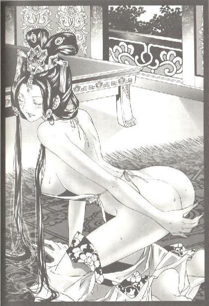
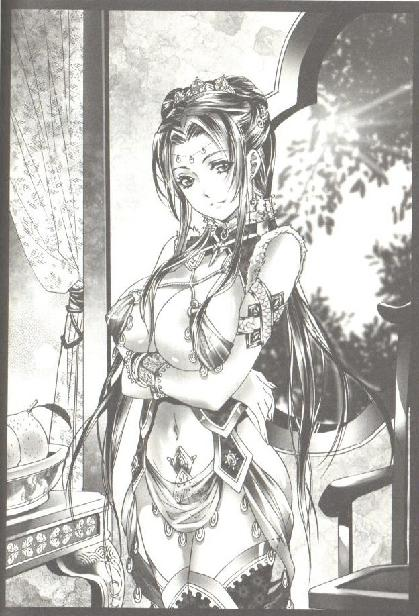

第35集·终铸大错
临安篇（4/10）
出版日期：2012-06-14
【本集内容简介】
程宗扬做梦都没有想到那宛如神仙的剑玉姬出招如此狠辣，借由云如瑶流产之事，嫁祸给萧遥逸！他怒极、恨极，更恼自己一直披着小侯爷的名义而没有解释！云家因此事切断给予江州的援助，江州纵有殇侯坐镇，又能支撑多久？
宋国朝堂因纸币发行而派系倾轧；太乙真宗的掌教之争终是尘埃落定；剑玉姬虽算无遗策，黑魔海巫宗却非团结一心……
※ ※ ※ ※ ※
封面人物：李师师

插图：阮香凝

插图：小紫
巍峨的梵天寺木塔浸浴在苍茫的暮色中，一行白鹭掠过飞挑的塔檐，檐角金色的铜铃在晚风中摇曳，发出清脆的响声，铃身映射出落日的余晖。
站在凤凰岭的最高处凭栏远眺，半岛上的雷峰塔、碧波荡漾的西子湖，甚至湖畔绿杨荫里的翠微园都隐约可见。
当目光掠过湖畔那边的桃林，程宗扬的眼角微微跳动了一下。
剑玉姬放出话来，要斩断云氏对江州的支持，但经过自己在中间的奔走，如今的云家与江州已经是一荣俱荣、一损俱损的利益共同体。而黑魔海在晋国的根基早已被清除干净，她哪里来的信心和手段能拆散双方的合作？
秦桧道：“剑玉姬……是个什么样的人？”
对于秦桧的询问，程宗扬也不知道如何回答。他踌躇良久，才一言难尽地吐出四个字：“神仙中人。”
秦桧道：“巫宗长于采补，这位剑玉姬莫非是国色天香的绝代佳人？”
程宗扬摇了摇头，“我不知道。”
秦桧挑眉道：“此姬面见公子时，难道戴着面纱？若是如此，她的身份便颇有蹊跷……”
“不是。”程宗扬道：“我和她交谈那么久，这会儿回想起来，连她具体长得什么样都不记得了，只有一个‘飘乎若神，仙姿无双’的印象——”
程宗扬举了举手指，似乎想勾勒出剑玉姬的相貌，最后还是放弃了。
“只知道她是个风姿绝美的女子。”
秦桧眉头微锁，心下暗忧。剑玉姬既然未曾遮面，家主却只见其风采，未见其面容，这种障眼的法术本是巫宗的秘技，不足为怪。然而凭他对家主的认知，另外一个可能性也不小：家主真是被剑玉姬的美色冲昏头了。
程宗扬感叹道：“我原以为自己遇到剑玉姬，会二话不说拼个你死我活，就算说话也没什么好话可说。但剑玉姬给我的感觉……”
程宗扬靠在栏杆上，有些不可思议地摇了摇头。
“竟然像交往多年的故人一样——你别误会，我绝对是头一次见到她，这种女子，我如果见过一面，肯定不会忘记。剑玉姬无论是言谈举止，都让人如沐春风。连她最后说准备斩断云氏和我们的联系，听起来都不像威胁，更像是一种善意的提醒。”
秦桧仔细听着家主的陈述，一边分辨其中的意蕴。
“这会儿说起来，我自己都有点不信。”程宗扬道：“从头到尾我都没有对她生出一点敌意，后来我觉得情形不对，故意用不客气的言词想去撩拨她的怒火，可她始终如一地从容不迫——干！”程宗扬一把拍在栏杆上。
“这会儿回想起来，我才知道剑玉姬最可怕的地方在哪里。会之，你知道吗？”
“请公子明言。”
“你这个猪！”
秦桧愕然片刻，然后潇洒地一躬身，“属下惭愧。”
程宗扬拍了拍他的肩，“看到了吗？如果别人故意出言不逊，一般人的反应无非是针锋相对地反唇相讥；或者装死狗，置若罔闻，任人唾面自干；或者诚心诚意地认错；还有一种是开个玩笑，好化解尴尬。”
秦桧沉吟道：“属下想来是第三种，剑玉姬如此高明，莫非是第四种？”
“我还没说完呢。”程宗扬道：“换个角度考虑，我出言不逊，第一种反应没什么好说的，大家大吵一架，一拍两散。第二种似乎是有涵养，但在谈判中出现，立即落了下风，让人存了看不起的心思。第三种更无聊，我都故意了，还认什么错？就算你做得滴水不漏，让我相信你的诚意，结果恐怕更不妙——强硬的觉得你是软柿子，如果是好人，免不了会心存歉疚。”
秦桧立即道：“公子千万不必歉疚。”
“得了吧，奸臣兄，我要对你歉疚，我就是傻子。”
秦桧笑道：“家主捷对，属下佩服。敢问剑玉姬可怕之处何在？”
“如果是第四种，未免显露聪明，让人心生戒意。剑玉姬的可怕之处在于：她的反应都在正常范围之内，没有针锋相对，没有让我看不起她，没有让我心怀歉疚，也没有显露智慧，让我生出丝毫戒意——我脾气发了，威胁也听了，可从头到尾对她都没有半点心结。”程宗扬揉着胸口道：“和她见面，感觉反而很舒服似的。”
秦桧琢磨片刻，“若是如此，剑玉姬似乎也不甚高明。既然是与公子谈判，着意引导公子的心意，达成目的，方是上策。”
程宗扬长叹一声，“我在路上也是这么想的。直到站到这梵天寺木塔上，我才想明白——她根本没准备谈成这桩生意！”
秦桧这下终于诧异了，“那她为何出面？”
“我猜，她这次出面只有一个目的，”程宗扬举起一根手指摇了摇，“建立信任。”
“信任？”
程宗扬苦笑道：“我知道这话跟疯了一样，但剑玉姬确实做到了——不但她说的每句话我都信了十足，而且对她这个人，我都有种说不清楚的信任感。她说对我没有恶意，我真相信她确实没有恶意。她说想招揽我加入黑魔海，我真相信她不但是认真的，而且不会过河拆桥，玩弄什么计谋。”
程宗扬拍着栏杆叹道：“从剑玉姬身上我才学到，一个人无论是机敏过人、才智非凡，还是国色天香、千娇百媚；无论是修为超凡入圣、天下无敌，还是位高权重、一言兴国——在人与人的相处中，其实都不是最重要的，真正重要的只有一点：信任感。就算你真是一头猪，我信任你，你就是神！”
秦桧有些不以为然，“何以至此？”
“你是没见过追星族和狂信徒。原本我也一直奇怪，为什么不管哪种傻瓜都有人崇拜？现在我才明白，就是他娘的信任。无论是圣哲还是傻瓜，只要能被人信任，就有人愿意当飞蛾——何况剑玉姬是来真的！”
程宗扬长叹一声，“我终于明白游婵为什么会对她死心塌地。这位剑玉姬，绝对是个操纵人心的高手，处理人际关系的天才！她的眼光，就像站在这梵天寺木塔上俯观天地一样，比我高得太多了。”
秦桧久久不语。要给人留下深刻印象并不困难，如何把握其中的度，在显示自己存在的同时，又不引起对方任何负面情绪——锋芒不露，直入人心，这才是最难的。
程宗扬忽然道：“桃之夭夭——后面是什么？”
秦桧应声道：“桃之夭夭，灼灼其华。”
“还有呢？”
“之子于归，宜其室家。”
程宗扬摸着下巴琢磨半晌，然后抬眼望着秦桧，“什么意思？”
秦桧愕然道：“公子未曾读过《诗经》？”
“当然读过！”程宗扬其实是心里没底，不知道这则《桃夭》在六朝的时空是否有其他意蕴，厚着脸皮道：“考考你不行吗？”
“桃之夭夭，灼灼其华，言桃花之极盛也。《礼记》有云：桃之有华，正婚姻时也。《易林》曰：春桃生花，季女宜家……”
“打住！说人话！”
“就是说桃花开得正艳，姑娘嫁得正好。”
程宗扬沉思良久，然后抬起头，一脸震惊地说道：“天啊！难道是剑玉姬思春了，想嫁人？”
“以属下之见，公子此解，只怕……不甚妥当。”
说话间，敖润一步数级地跃上木塔，“冯大法带着人把金铢运来了！林先生也到了，路上没发现有人盯梢。”
程宗扬收起刚才那点感叹，带着秦桧快步离开木塔。
※ ※ ※ ※ ※
一间僻静的禅房内，林清浦已经准备好铜盆、清水、灵砂。程宗扬进门走到他面前，林清浦随即施展出水镜术，手掌在空中一抹，凝出一面水镜。
江州的音讯被宋军阻绝，水镜术只能联系到筠州。当水镜的波光变得清晰，显示的影像让程宗扬大喜过望，“小狐狸！你怎么来筠州了！你的伤怎么样？”
萧遥逸没有戴那顶象征身份的金冠，只是随意束了一角乌巾，手肘靠着一张软垫，脸上挂着放浪不羁的微笑。
“圣人兄！吓你一跳吧？放心，一时半会儿还死不了。”
“江州怎么样？”
小狐狸身为江州刺史，现在双方正据城血战，他丢下江州跑到宋国境内，怎么看都不合情理。
一眨眼间，萧遥逸就收起笑容，摆出一副刚死了亲爹般的哭丧表情。
“宋军在城外建了法阵，克制了城中大半的法术。十三座堡垒被打掉九座，宋军的土墙已经垒到城墙边上，大伙不用出城就能和宋军聊天打屁。夏用和那个老匹夫，昨天已经开始堵截西门的水路——你说怎么样？”
程宗扬这一惊非同小可，“真的？”
萧遥逸忽然大笑起来，“哈哈！吓住你了吧！”
程宗扬没好气地说：“你这个死狐狸，敢骗我！”
萧遥逸指天发誓道：“我有一个字说谎，出门就让我撞到秦太监！”
“宋军都登城了，大家还打个屁啊！”
“宋军也是这么想的，所以把土墙修好，大家就歇了。前几天我还和宋军一个军官在城头谈生意，一贯银铢卖他两双丝袜，说是孝敬上官用的。怎么样？这生意还不错吧？”
程宗扬沉住气道：“怎么回事？”
萧遥逸一拍几案，咬牙切齿地说道：“殇侯那个老东西！把我们兄弟的风头都抢了！”
“死老头那么低调的人，会抢你的风头？”
“低调？那老家伙让人举着大旗……”
“等等！死老头打的什么旗号？”
程宗扬不信死老头敢打着“鸩羽殇侯”的旗号出来，可如果他打出“盘江程氏”的旗号，自己就得赶紧化装跑路了。
“八八！”萧遥逸一脸不屑地说道：“这算什么鸟旗号？还举得几丈高。一群人敲锣打鼓，摇旗呐喊，沿城墙划了一道黑线。那作派，城里城外看得那叫一个热闹！跟耍猴差不多。”
“病毒！”程宗扬拍手道：“死老头终于干了件好事！”
“好个屁啊！”萧遥逸的眼泪都快下来了，“老东西说那条线至少能换宋军五万条人命。”
“这不是好事吗？”
“好个蛋啊！老东西说，每条人命起码一枚金铢，划完线就找我要五万金铢。”
程宗扬听得直咧嘴。死老头真够不要脸的，在自己身上赔了钱，死乞白赖要从星月湖身上找补回来。
他却不知道殇振羽也是欲哭无泪，小紫的傀儡铁人活活就是个烧钱机器，他老人家天天大出血，要不从萧遥逸这里敲一笔，眼看就要失血休克了。
“五万金铢？”程宗扬关切地问：“你破产了吧？”
“早就破产了！”萧遥逸道：“老东西张嘴就要现金，我好说歹说才宽限了几天，先打了张欠条，说好十天内付现，超期一天，多付一成的利息。”
“十天？我倒是想帮你，可我这会儿向你运钱也来不及啊。”
“我用少陵侯府在建康所有的产业做抵押，向云氏借贷五万，云三爷已经答应了，这两天就送钱先给我应急。圣人兄，你把我坑苦了！殇侯那老东西活活就是个属蝙蝠的，逮住血就往死里吸啊。”萧遥逸终于说到正题，“这笔钱，你得替我出了。”
“你签合同，我去付款？你打听打听，天下有这个道理吗？”
“我不管……”萧遥逸眼泪汪汪地说道：“都是你带来的吸血鬼……我的龙牙锥……呜呜呜……你若不付钱，我就死给你看……”
“我看你是闲的！”
殇侯终于出手，江州即便不算固若金汤，挡住宋军几轮攻势也不在话下，难怪小狐狸能溜出来，还有闲心跟自己扯淡。
程宗扬这会儿也不着急了，笑眯眯道：“你要还不起钱，我倒能给你出个主意——瞧你这一身细皮嫩肉，白白净净的，不如把自己卖给殇侯，说不定老家伙就好这一口呢。”
“不就是屁股吗？真能换钱撑过这一仗，谁敢买，我就敢卖！”萧遥逸衣服一撩，拍着屁股叫嚣道：“有种朝这儿插！”
“这么不要脸的话，你小声点吧！”程宗扬连忙道：“清浦！赶紧把声音整小点儿，别让外面的和尚听见！”
“为弟兄们的性命，我卖屁股我光荣！”萧遥逸叫道：“你信不信？大街上我都敢说！”
“我信！我信！比起不要脸，小侯爷怕过谁？”程宗扬道：“别扯这些没用的——兄弟们怎么样？”
萧遥逸悻悻道：“好得很呢。就是武二爷和秋小爷去砸宋军的法阵，撞上姓秦的死太监，吃了点小亏。”
“等等，你说秋小子我还信，但武二那厮从来都是捻轻怕重、偷奸耍滑，偷袭宋军这种事他会干？”
萧遥逸咂了咂嘴，“这事儿吧，本来是咱们秋爷追着二爷决斗，整天闹得鸡飞狗跳。后来紫姑娘发话，说他们这样打一点意思都没有，不如去砸宋军的法阵，谁先得手算谁赢。咱秋爷是个明事理的好人，一听就答应了。二爷呢，是个一点亏都不肯吃的横人，说什么也不答应。”
萧遥逸一脸稀罕地说道：“后来不知道紫姑娘和武二说了什么，二爷当时就跟打了鸡血似的冲出城。程哥，你是没见着，连孟老大都在城头看呆了，直夸二爷：好一个风一般的男子！”
小紫要挑动武二还不容易？只要在武二面前挂块骨头，写上“苏荔”俩字，保证二爷跑得比狗还快。
“然后他们两个就被秦太监打了？该！”程宗扬道：“让他们消停两天！小紫呢？她怎么没来？”
“紫姑娘这两天身体不舒服。”
程宗扬腾地站起来，“怎么回事？你给我说清楚！”
萧遥逸咳了两声，然后道：“我跟你说实话，你可别往心里去——我们兄弟都瞧着紫姑娘年纪小，为人又好，都没在意……”
萧遥逸吞吞吐吐的样子让程宗扬更是悬心，“出了什么事？”
“真没什么事，就是紫姑娘趁着武二和秋小子出城的时候，误入了宋军的伤兵营……”
程宗扬沉着脸道：“然后呢？”
“后来听说伤兵营里的宋军死了六成——肯定不是她动的手，但紫姑娘似乎受了惊，这几天身体都不舒服。”萧遥逸小心道：“程哥，你不会对紫姑娘有什么不好的看法吧？”
不好的看法？你亲哥我早就领教过了。什么误入，你以为她是人畜无害的小白免啊？死丫头打的什么主意，我用肱二头肌都猜得到！她拿那两个傻瓜钓鱼，自己闯到宋军的伤兵营采集魂魄去了！难怪不肯跟我来临安呢。
程宗扬心里恨恨道：你这个死丫头，一次少采点儿会死啊！这下吃多了吧！
虽然一肚子抱怨，程宗扬却没有太多担心。有殇侯在，死丫头最多就是个消化不良，不过她要这么多魂魄，究竟想搞什么呢？
萧遥逸看他的脸色时阴时晴，也不打扰他，只打开折扇轻轻摇着。
良久，程宗扬吐了口气，“难怪你亲自来呢，就是说这个吗？”
宋军的威胁、殇侯的勒索，都不算大事，至少用不着萧遥逸亲自跑一趟。他这会儿跑到筠州跟自己见面，为的还是小紫。在八骏眼里，岳帅的女儿就等于他们的亲妹妹，死丫头一直伪装成邻家小妹，结果一出手就是几千条人命，顿时把几兄弟都吓住了。人命事小，但这事如果成为程宗扬与小紫之间的阴影，只怕会影响两人往后的相处，不由得八骏不上心。从中也能看出，八骏对小紫，包括对月霜的爱护。
见程宗扬没有异样的表情，萧遥逸也放下心来，这才说到正事。
“围城到现在，星月湖的兄弟虽然还能支撑，但伤亡越来越大，佣兵和各家部曲的损失也不小。说实话，我们现在全靠着云家的补给和殇老头的病毒喘口气，一旦水路被截断，就要陷入大麻烦。程兄，你那边还要等多久？”
“我本来准备再等几天，把握更大一些。既然这样，四个时辰之后，我开始粮战的操作，快则七八天，慢则十来天，必见分晓。”
“好！”萧遥逸立刻眉飞色舞起来，“圣人兄，这次你要能把江州的事解决，我就舍命陪君子，陪你乐一把，好不好？”
“去死！”
小狐狸翘了个兰花指，往脸侧一甩，“讨厌……”
“死狐狸！小心我隔着水镜吐你一脸！”
林清浦散去水镜，双方音讯断绝。
程宗扬在暮色中坐了一刻钟，然后下定决心，“是龙是蛇，就看这一出了。林兄，敢不敢跟我赌一把？”
“如何不敢？”林清浦道：“二百银铢，我赌公子赢。”
“钱不少嘛。”程宗扬笑道：“别被老敖听到了，找你借钱。”
林清浦道：“敖队长要照顾的人多，不怎么花在自己身上。”
“老敖是厚道人。”程宗扬道：“等雪隼团的名册造好，愿意加入盘江程氏的都由公司负担，不用他自己掏腰包了。”
林清浦沉默片刻，叹道：“公子仁厚。”
“只要愿意跟着我的，我都会尽力照应。没有后顾之忧才好用心做事，算下来还是我赚了。”
程宗扬涎着脸等林清浦的回应，半晌没有下文，只好一笑道：“我去见云六爷。”
※ ※ ※ ※ ※
云秀峰正和一名须发俱白的老僧对坐品茗，见程宗扬进来，笑道：“这位是梵天寺的方丈，智永大师。”
智永大师年过六旬，慈眉善目，令人一见便心生敬意。
程宗扬拱手道：“小子程宗扬，见过大师。”
“阿弥陀佛，”老僧合什道：“檀越不必多礼。两位既然有事商谈，老衲便告辞了。”
云秀峰也站起身来，两人礼送智永大师离开。
程宗扬坐下来道：“江州情形吃紧。临安的粮战筹备这么久，我准备明天一早全面发动，云六爷，我需要我们目前所有粮食的准确数字。”
云秀峰为人寡言，双掌一击，让人送来账册。
“冯大法。”
“哎！”冯源应了一声，摊开纸笔。
程宗扬手上事务繁多，最要紧的莫过于寻觅刻石工匠，制作纸币的印模，这件事极为缜密，只有秦桧能做。林清浦施术之后需要静养凝神。眼下就剩冯源还算粗通文墨，程宗扬赶鸭子上架，把他拉来负责誊写账目。
冯源的字差了点，算起账来却一板一眼，极是用心。两人用了一个多时辰，才将账目核对了一遍。
云氏在宋国一共有四十三家分号，其中三成在明、七成在暗。从年前开始囤积粮食，少的有三五万石，多的超过四十万石，包括筠州祁远的交易在内，总计二百七十六万石，一共动用资金七十一万金铢。另外还有向晴州朱氏粮行购买的一百万石粮食，耗资十五万金铢。
各地粮价参差不一，但眼下正值青黄不接的时节，即使在以往，粮价也在每石六百到八百铜铢之间。去年宋国推行方田均税法，大量土地抛荒，粮食减产近一成，加上江州战事和云氏暗中收购，市面流通的粮食大量减少，除了极少的粮食主产区以外，粮价都超过每石十二银铢。而在临安这样人口集中的大城市，粮价已经突破每石十五银铢，甚至攀至十八银铢。如果按目前的价格全部放出，单是云氏囤积的现粮，就将近二百万金铢。
但无论云秀峰还是程宗扬，都清楚这种理论上的超额利润绝不会实现。一旦各地云氏商号全面抛售粮食，粮价就会应声下跌——想从宋国粮食交易市场中提走二百万金铢的现金，而指望一般的居民来买单，完全是作梦。
程宗扬已经考虑多日，这会儿细看了账目，胸有成竹地说道：“云六爷既然信得过我，程某就来做个简单的布置。”
云秀峰端坐椅中，身体纹丝不动，手掌却下意识地握住玉佩。毕竟这笔生意牵涉到近百万金铢，即使以云氏的家业也几乎抽空了所有的流动资金。
“明天一早，开始按市价出售粮食，各地商号的抛售量不许超过一成，看看市场的反应。如果各地市场出现一银铢以上的下跌，说明市场还有大量余粮，那么从第二天起，我们转为收购。”
云秀峰仔细听着。程宗扬考虑更多的是江州的安危，但对云氏而言，最重要的当然是利润。从资金安全角度来讲，现在粮价已经达到十五银铢，即使逐渐销售也有足够的利润，如果收购以提升粮价，反而增加了风险。
“有两个因素，”程宗扬解释道：“第一是探清常平仓的虚实。如果粮价超过十五银铢，各地的常平仓仍没有粜粮平抑市场，说明宋国的常平仓已经无粮可调。另一个是透过先降后升，淘汰一部分投机者，让他们有机会获利离场，让我们能最大限度地控制交易。”
云秀峰道：“如果无人接盘，这些粮食又该售到何处？”
程宗扬笑道：“接盘的人已经在路上了，快则明日，迟则后日，就有人来接盘。”
云秀峰注视程宗扬许久，然后道：“一代后浪推前浪。好，便依你的主张去做。”
“多谢六爷！”
程宗扬没有向云秀峰提及黑魔海的威胁，虽然他知道剑玉姬的恫吓不是虚言，但在明白剑玉姬的手段之前，自乱阵脚只会让黑魔海有机可趁。他相信，只要篱笆扎牢，把自己和云氏的关系搞成像水泥一样坚实，黑魔海再怎么挑拨也无济于事。
接下来的一整天，程宗扬都留在梵天寺，一边趁机抽时间精炼真气，一边等待粮价的情况。
傍晚时分，第一批交易消息透过信鸽传至临安。抛售的第一天，各地粮价涨跌不一，但大都维持原价，只有三五个州县出现小幅下跌。
程宗扬放下卷宗，打了个呵欠道：“看来市面的余粮没有多少，从商人身上榨不出什么油水了。”
※ ※ ※ ※ ※
程宗扬本来打定主意不离云秀峰半步，让黑魔海无机可趁，但秦桧带来的口信却让他不得不赶往临安城中。
推动粮战的同时，程氏钱庄的设立也在快速推进。程宗扬与贾师宪在半闲堂敲定交易，只隔了一日，廖群玉便请程宗扬到户部，当面将四十万金铢的本金交割给程氏。这样雷厉风行，可见宋国对这二百万纸币的急迫。
急迫归急迫，廖群玉透过临安府向程氏提供的钱庄铺面，却在城南一条不起眼的小巷里。按秦桧的说法：一看门面，就知道老贾对纸币的心虚，恨不得低调再低调。
程宗扬也不含糊，直接告诉廖群玉，按照当初商谈的条款，包括临安在内的五家分号都应当由程氏选址，宋国无偿提供土地。贾太师急于发行纸币的心情可以理解，但以这处铺面作为钱庄的总号，程氏非常不满意。
在廖群玉看来，发行纸币相当于从程氏索取一百六十万金铢的无偿贷款。陶氏钱庄提供一百万金铢的借款，少东家就敢放贾太师的鸽子，这么寒酸的铺面，不但程氏不满意，连他都觉得有点过意不去。
廖群玉只好道：“依公子之意，选在何处合适？”
程宗扬摸着下巴道：“纪家桥东有座宅子，好像几十年没人住了。房子虽然破了点，但位置还过得去……我看就那里吧。”
廖群玉脸色微变，“公子最好另选佳处。”
程宗扬装傻道：“怎么？那地方有什么不合适？”
廖群玉似乎不愿提那人的名讳，半晌才道：“那是武穆王府。”
程宗扬睁大眼睛，一脸无辜地问道：“武穆王是谁？”
秦桧暗道：家主，你这就演得太过了！他洒然一笑，上来打圆场。
“公子常年在盘江，头一次来临安，以前没听说过武穆王。鄙人却是听过的，是前朝一位王爷，坏了事，王府就空置下来。”
“正是。”廖群玉不愿多谈，忙道：“那是不祥之地，公子再往城中看看如何？”
“老廖，”程宗扬亲热地搂住廖群玉的肩膀，“房地产这块你不熟吧？我跟你说，房地产讲的就是位置！那地方位于中央商业区，紧邻临安最大的娱乐区北瓦子，西面是钱塘门，雄据临安城主干道，交通便捷，商业发达，人气鼎盛，一等一的黄金地段！白白空着多可惜？你若交给我来开发——我一把将它全拆平了，沿街全部建成三层的豪华商铺！里面是钱庄、综合性娱乐场所！能把整个临安的城市水准提升到一个新高度！你看怎么样？”
廖群玉都愣了，他只听明白一句：“拆掉武穆王府？”
“外行啊！不拆迁怎么搞开发？会之，”程宗扬扭头道：“武穆王家里没人吧？会不会出来个什么侄儿、外孙的跟我打拆迁官司？”
不等秦桧回答，廖群玉便道：“没有！绝对没有！”
程宗扬讶道：“老廖，你这么肯定？跟你说，我们搞拆迁的，最怕拆迁户有什么闹不明白的亲戚来争房产，官司打不起啊！”
“员外放心，以廖某所知，不但宋国，整个六朝都不会有人借着武穆王的名义来争房产，更不用打什么官司。”廖群玉道：“但此事还是请公子三思。”
“钱庄我已经赔大了，你总得让我搞搞房地产捞回来一点吧？”程宗扬道：“不然这样：除了户部的本金之外，我再提供二十万金铢的本金，同样五倍发行纸币！”
廖群玉的脸色先白后红，程宗扬这句话足足是一百万金铢！他口气终于松动了些，“此事在下难以决定，还需禀知太师，请公子见谅。”
“好说好说。”程宗扬笑道：“既然如此，纸币的事咱们也不用再等，面值三百万金铢的纸币，明天就开始印，三天之内让你们户部能拿到手、用出去，怎么样？”
廖群玉良久叹道：“公子好魄力。”
程宗扬笑道：“一般一般。”
廖群玉赴葛岭禀知贾师宪，秦桧忍不住道：“如今我们手上现金不足十万金铢，还是欠云家的钱，二十万金铢的本金，公子如何拿得出来？”
“要什么本金？多印点纸币就够了。”程宗扬笑道：“只要兑付的能拿到现钱，谁管你库房里有四十万还是一百万金铢？”
“四十万金铢本金，发行三百万纸币？风险太大了，家主！”
“风险是有点，但比你想的要小。”程宗扬叹道：“我是不好意思把三百万纸币全都拿过来自己花啊。”
秦桧一愕之下，终于明白过来，“粮款！原来公子打的这个主意！”
“只要能抵税，我怕个鸟！”程宗扬道：“现在就看老贾舍得拿多少纸币买粮食了。”
程宗扬打的如意算盘是用云氏的囤粮，将发行的纸币全换回来。既推动了纸币的发行，又赚取了足够的利润，而且还扣下了四十万金铢的本金供云氏周转。无论是贾师宪、宋国朝廷，还是云氏商会和自己的盘江程氏，几方各取所得，皆大欢喜。只要这一炮打响，自己的盘江程氏就在宋国扎下根了。
程宗扬脚步忽然一停，朝旁边望去，“老鲁？”
街旁一位大和尚身披禅衣，盘膝坐在青石台阶上，正是花和尚鲁智深。
他双掌合什，也不知坐了多久，身边的地上扔着几枚零星的铜铢，倒像是在监狱门前化缘的。牢里的狱卒大概过来赶过，赶不动，也就随他去了。
程宗扬抬头一看，“好你个老贾，钱庄给我选到监狱旁边，是不是准备纸币一玩砸，就直接把我扔牢里？”
鲁智深眼观鼻、鼻观心，一副雷打不动的模样，忽然他眉梢一挑，抽了抽鼻子。
程宗扬晃着纸包道：“前腿？后腿？”
“恁多废话！”鲁智深劈手夺过来，扯开油纸，一手捞着一条烧得烂熟的狗腿啃得不亦乎。
程宗扬蹲下来，“花和尚，你在这儿坐几天了？”
鲁智深顾不上回话，眉毛挑了三下，表示自己已经坐了三天。
林冲四天前出事，鲁智深得到消息已经是第二天，他先用了半天时间四处打探，全无音讯之下，索性守在大牢门口，一坐就是三天，这份情义让程宗扬不得不佩服。
“林教头的事我已经听说了。别担心，太尉府的处置已经下来了。”
鲁智深霍然抬头，“什么处置！”说着一口狗肉喷了出来。
程宗扬连忙去躲，还是沾上一块。他没好气地擦擦脸，“怎么跟老臧一个样呢？”
“我们是师兄弟嘛！”鲁智深亲热地来拉程宗扬的手，“程兄弟，到底是什么处置？”
“别！别！别！一手的油！”程宗扬道：“流刑！刺配筠州！”
鲁智深勃然大怒，“哪里便要流刑！林师弟临安人氏，刺配筠州，家中的嫂夫人谁来照料！”
真是个好问题。程宗扬使了个眼色，“大和尚，咱们聊聊？”
鲁智深心领神会，拿起禅杖，拎着狗肉和程宗扬一道上了马车。
“野猪林？”
“过了西湖，再有一日的路程，是往筠州去的必经之地。老鲁，敢不敢干这一票？”
鲁智深摸着光头哈哈大笑，“洒家有何不敢！好兄弟！林师弟这条性命多亏你了！”
“处置虽然出来了，但要到三月初才能启程，到时候如果不忙，我跟你一道走一趟。”
鲁智深往大腿上狠狠擂了一拳，恨声道：“只恨嫂嫂下落全无，到时见着林师弟，他若问起，洒家该如何答话？”
这倒是个麻烦，凭林冲的性子，自家娘子失踪，恐怕能找一辈子，不定什么时候就是个炸弹。程宗扬暗暗道：得想办法解决这个隐患了。
※ ※ ※ ※ ※
双方约好时间，程宗扬与鲁智深分手后，本来该悄悄见高俅一面，交换一下信息，但黑魔海的威胁言犹在耳，粮战更在紧要关头，程宗扬想了又想，还是先回梵天寺坐镇，只让敖润去了趟橡树瓦子。
在程宗扬收集整理各地粮价的同时，秦桧用重金请来临安城最好的两名石匠，用了一天一夜的工夫雕成纸币的印版。第二天中午，秦桧带着新印出来的纸币样张赶赴半闲堂，面见贾师宪，这一去，直到傍晚才回来。
正如程宗扬所料，在一百万金铢的诱惑下，连贾师宪也为之心动，终于同意把空置多年的武穆王府交给盘江程氏“开发”，条件是必须将王府全部拆掉，不留一砖一瓦，建成之后更不能有原王府的丝毫痕迹。
程宗扬弹了弹信笺，“老贾对咱们武穆王可是恨到骨子里了，瞧瞧‘岳逆之宅’这几个字，隔着纸我都能听见老贾的磨牙声。”
秦桧道：“我在旁边观瞧，最后打动贾相爷的，多半不是一百万金铢纸币，而是公子说的拆迁。看情形，贾相爷早就想把武穆王府拆光推平了。”
程宗扬放下信笺，“今天去半闲堂，除了纸币，老贾还跟你商量什么了？一脸得意外露啊，奸臣兄。”
秦桧微笑道：“贾相爷看了纸币的样张，已经点头同意。若论起对纸币的急切，他比公子还着急几分，当即要我们印出一百万金铢票面的纸币交付户部。属下说这样模尚显简陋，只怕有人伪造。贾相爷立刻要廖先生携币去户部盖印确认，如果有人伪造户部的印鉴，那是斩立决的重罪。”
程宗扬急忙道：“千万不可！”
秦桧笑道：“在下当时便回绝了贾相爷的好意。纸币既然是我们程氏印行，其中的风险自然由我们程氏担当。盘江程氏不才，宁愿自己担责任，也不愿给宋国官府添丝毫麻烦。”
死奸臣这番话已经把握到自己浑水摸鱼的心思，不过能说得这般冠冕堂皇，就是他的本事了。
“不会只谈了这些吧？”
秦桧笑道：“承蒙贾相爷看得起，我这个程氏钱庄的大执事和相爷商量了一下纸币的用法。相爷也说草民所言的‘大宗采购使用纸币’的法子可行。估计明天贾相爷就会面奏宋主，推行公子的钱币大计。”
这是程宗扬准备设立钱庄之初就设计好的套路，笑道：“老贾是什么章程？”
“贾相爷可能是信得过鄙人，谈及大宗采购的时候，说到各地常平仓的存粮。”
“老贾连这都对你说？”
军国大事，随便就透露出去，程宗扬对贾师宪“轻佻”二字的评价又加深了几分。
秦桧道：“目前宋国四百军州，三百余处常平仓，总计存粮不足四百万石，其中临安的常平仓占了近三成，有存粮一百余万石。”
“一百余万石？不少啊。”
“临安的常平仓在平常时节是存粮六百万石。”
“空了这么多？”程宗扬拍案而起，“太好了！”
“眼下青黄不接，江州战事还未平息，贾相爷估计，单江州前线，就至少要再采购二百万石粮食。我已经提请贾相爷，粮为人纲，眼下青黄不接，民间最易生变，这批纸币印发之后，先用来采购粮食。”
程宗扬笑道：“老贾答应了吗？”
秦桧道：“贾相爷有些担心，全用纸币只怕内外生疑，商家也不肯接受，于是在下与廖先生商量出个法子：购粮所需款项由户部和州县对分，一半由户部支付纸币，一半由州县支付钱铢，向各地商家购买粮食。”
程宗扬大喜过望，“奸臣兄，有你的！”
这比程宗扬当初的设想还要完美，除了收回纸币以外，还能回笼一半的钱铢。有这些硬通货在手，再多发行几倍的纸币也不用担心本金的问题。
发行纸币最大的软肋是防伪，程宗扬依稀记得水印并不难做，只要在造纸的时候改变纸张的部分密度，就能制出水印。但这会儿一是来不及，更重要的是宋国如果有人能制出水印，肯定也有人能仿出来，只好用最原始的方法防伪了。
“第一批纸币先印面额一万贯的一百张，带编号，全部由我签字画押，打上指模。第二批面额两千贯，印五百张，也一样处理。”
“是。”
程宗扬靠在椅背上，悠然道：“再来就要看云家商号的了。”
程宗扬与贾师宪各怀心思，在尽快发行纸币这一点上一拍即合。秦桧用屯田司员外郎的名义加上每月二百银铢的重金，半是礼聘、半是威逼地将两名石雕工匠请到梵天寺，担任程氏钱庄的专职雕版师。当天晚上，便用最好的纸张和墨料，印出一百张标明“程记钱庄”发行的万贯面额纸钞，由家主程宗扬签字画押，按上指印。
次日一早，这一叠崭新的纸钞在廖群玉和户部官员的共同见证下，进入户部库房。
如果说贾太师当初在《为兴邦整兵增岁入汰冗员诸事札子》中，列出总额一千万贯的特别开支计划，招致的仅是其他派系官员的腹诽和冷笑，当户部的消息传出，贾师宪准备以纸币补充财政的举措，立即在宋国朝堂引起轩然大波，非议之声响彻云霄。
温和点的说贾师宪是与民争利，不足为朝廷法度；不客气的当即弹劾贾师宪以纸充金，强买强卖，有辱国体；更激烈一些的将新账、老账一起算，密密麻麻列出贾师宪十大罪，二十可杀，三十恶行……力谏宋主把贾贼押赴法场，明正典刑，以儆效尤。
程宗扬原本以为贾师宪在宋国的地位稳如泰山、一言九鼎，看到高俅密送来的内幕资料才知道老贾的日子也不好过。
尤其有些弹劾贾师宪的札子，内容简直是狗血。什么贾师宪私自截留内庭宫女，与俳优娼妓滥淫，甚至收了一个尼姑当小妾。还有人活灵活现地说某官员怎么急于向贾师宪汇报灾情，却被告知相爷正忙于军国大事，该官员苦等两个时辰，急切之下闯入多宝阁，却见贾师宪正搂着妓女斗蛐蛐……
札子最后字字血泪：贾贼一日不除！百姓一日不安！臣伏阙泣血而谏，为我大宋千秋万载基业，求陛下立将贾贼押赴午门，凌迟处死！臣为国剪除此獠，死而无憾！
程宗扬看得一身鸡皮疙瘩。宋国这些文官比武将可猛多了，看模样，一个个都有拿笔把贾师宪戳死的实力。
高俅知道他对宋国朝廷两眼一抹黑，每份札子旁边都一一标明王党、梁党、贾党……让程宗扬惊讶的是，骂贾师宪最狠的那份，竟然出自贾党成员的手笔。
“这不是反水，是贾师宪欲扬先抑之计。”秦桧道：“骂得越狠，贾师宪越安全。”
“还有这一说？”
“如果这份札子能把贾师宪扳倒，请问如此十恶不赦的大奸贼如何能历经两朝，柄政十余年？岂不是两代宋主都无知人之明？”
程宗扬笑道：“被你一说，还真是这样。不过我要是宋主，哪天心情不好，就真给他来个顺水推舟，让老贾哭都没地方哭去。”
秦桧浏览过札子，皱眉道：“贾师宪的处境只怕不妙。”
“可不是嘛。”程宗扬道：“这些札子读下来，我觉得老贾都够死十七八遍了，可他老人家还好端端在多宝阁玩虫呢。”
“不是这些问罪的札子，而是这几份。”秦桧挑出来，“这些札子中只说去年以来天灾不断，各地出现流民。看似与贾师宪无关，用心却着实毒辣。国中不靖，少不得有朝廷重臣要为此负责。这几份札子都出自帝党手笔。”
程宗扬一惊，“你是说宋主要收拾老贾？”
“大有可能，不过此事未必能扳倒贾师宪，札子里还是留了些分寸。真正冲在最前头的反而是梁党。”秦桧敲着另几份札子道：“梁师成是想取贾师宪而代之了。”
贾师宪倒台是注定的结局，但想取而代之的梁师成，好像也没有如愿以偿。
高俅这个铁杆帝党只在札子里不咸不淡地扯了几句，看来老贾这次还倒不了台。
※ ※ ※ ※ ※
程宗扬并没有把宋国朝廷的纷争放在心上，但有些事总在意想不到的时候发生。
次日是程宗扬抵达临安的第十一天，廖群玉天一亮就赶到了梵天寺。
“陛下有旨——宣工部屯田司员外郎程宗扬入宫觐见。钦此！”
程宗扬正在漱口，愣了半晌才一口咽下，“我不用摆香案，跪下接旨？”
“来不及了！快走！快走！”
廖群玉路上才解释，宋主昨晚召贾师宪入对，询问纸币的始末，贾师宪细陈原委，半夜才出来。
谁知宋主当晚便派内侍召见程员外。程宗扬在城中的住处早已人去屋空，内侍找到天亮，没办法才找到太师府。廖群玉接到消息就赶紧来了。
“陛下召见我，是为了钞法？”
“我也不知道。”廖群玉又补充了一句：“贾相爷也不知道。”
程宗扬左思右想，总不会是自己漏了底细吧？宋主听说自己和岳鸟人旧部有联系，召自己入宫开刀问斩……或者是因为自己吃了梦娘的豆腐，宋主要为他的奶妈报仇？
廖群玉见他脸色微变，以为他心下紧张，劝慰道：“不必拘谨，到了陛下面前，有一说一便是。”
我若真的有一说一，别说我今天出不了大内，你们贾太师也要倒大霉。
“多谢廖兄，”程宗扬哈哈一笑，“我这会儿好多了。”
临安内城向南一直扩展到凤凰岭，城中是各部官署，太尉府也在其中，再往里才是宋主所居的大内。从梵天寺下山，经内城进入大内，反而比城中更方便一些。
临安大内比起建康晋宫也不遑多让。城墙上，成群的禁军如标枪般挺立着，衣甲鲜明，气势威严。宫中古木森森，一眼望不到边际。
廖群玉未奉诏，无法入内，在宫门前就停下脚步，一名小黄门领着程宗扬穿过重重门禁，朝内宫走去。
那小黄门一开始和锯嘴葫芦一样，埋头带路，一言不发。程宗扬瞧着周围无人，几枚金铢悄悄塞过去，小黄门立刻变得知无不言、言无不尽，甚至连宋主亲手在白屏风上写下“江州群寇”的事都说了出来。
不愧是宋主身边的耳目，这情报比高俅还来得真切。程宗扬道：“陛下的意思是要接着打下去了？”
“这个咱家……咳咳……”
程宗扬又塞了几枚金铢，悄声道：“我是工部的官，一会儿陛下召见，万一问起这事，我心里先有个谱。”
小黄门笑逐颜开，“你算问对人了，这事儿还真就我童贯清楚！”
程宗扬耳朵“嗡”的一声。童……贯……原来你在这儿等我呢！
贾师宪、高俅、梁师成、童贯、夏用和，再加上秦桧——宋国此时朝野算得上是群奸毕集了。一等一的国力却在六朝混得最惨，倾国之力打不下小小一个江州，不是没原因的。
这一走神，后面几句没听清，等程宗扬定下神来，只听还在幼齿的童贯说道：“……可贾相爷非要打，陛下争不过相爷，只好答应了。再后来吧，三川口、好水川、定川寨，这一连串的败仗下来，陛下就急了。虎翼军什么的都是陛下亲自下诏调往江州的。咱家瞧着，陛下现在是主战的……”
听起来宋主一开始不同意出兵，打急了才发狠，倒也符合他年轻人的性格。不过程宗扬总觉得有些蹊跷，联想到宋主和梦娘的关系，会不会是黑魔海放出梦娘在江州的风声，也被宋主听到了？
程宗扬试探道：“听说陛下的奶妈……”
童贯一愕，“没听说陛下有奶妈啊？”
程宗扬心头剧震：难道高俅在撒谎？
他还想再问，但小黄门已经领着自己来到一座大殿前。程宗扬只好匆匆道：“在下姓程，改日请公公喝茶，一定请童公公赏脸！”
童贯现在还只是宫内一个不起眼的小内侍，见程宗扬这样客气，顿时笑得见牙不见眼。
“好说！好说！程员外请。”说着他附在程宗扬耳边道：“御座前正数第九块金砖——下面是掏空的，磕头梆梆响！”
程宗扬小心翼翼地踏进大殿，好在廖群玉在路上匆忙教了他一些宫廷规矩，什么多磕头少说话；眼睛盯着脚尖，别抬头看陛下；告退的时候别转身拿后背冲着陛下，老老实实倒退着出殿门……一套礼仪照做下来，总算没出什么岔子。尤其是童贯指点的那块金砖，果然是“梆梆”的响。
一个清亮的声音响起：“你是现任的客卿，工部屯田司员外郎程宗扬？”
听声音，这位宋主的年纪并不大。岳鸟人在十五年前出事的时候，宋主只是个七八岁的小儿，再加上宋国习俗的虚岁，宋主的实足年龄恐怕比程宗扬小五六岁，也就是二十岁上下。
不过宋主问完，程宗扬才想起来，应该是自己报官职姓名，宋主似乎等了半夜，心里正急，不等自己开口就先问了出来。
“臣正是。”
“纸币是你的主意？”
这个问题，一般人回答时都会往贾师宪身上推，免得出事没个垫背的。但程宗扬巴不得把功劳都抢过来，当下也不客气，“正是臣的主意。”
“且仔细说说。”
程宗扬打起精神，将纸币的发行、使用、兑换仔细说了一遍。
“这么说来，你是拿出自家财产，先垫付三百万金铢的赋税，由户部支取使用？”
“陛下英明！”
宋主站起身来，在御座前走了几步。
程宗扬按规矩没法抬头，只能悄悄瞧着宋主的靴子尖，心里琢磨这位宋主会是宋朝哪位帝王？
绣着龙纹的靴子停了下来，宋主道：“除去本金，你自出家产，垫付二百六十万金铢，有什么好处吗？”
程宗扬一怔：这位宋主还真直接啊！若说君子喻义、小人喻利，他会不会当场翻脸呢？
“臣不敢欺瞒陛下，好处自然是有的。”程宗扬道：“臣身为商人，本不是在职官员，蒙滕知州青眼有加，荐为客卿，但臣骨子里终究是个生意人。做生意携带大笔钱铢奔走各地本就不便，这五间分号一旦开张，至少臣在各处的生意往来可以用纸币支付，单是押镖的支出也节省不少。”
“那才几个钱？你要付的是二百六十万金铢。”
“禀陛下，其实是一百六十万，另外一百万是武穆王府的购地费用，将来好拆迁重建。”
殿中的气氛顿时凝滞下来，程宗扬都能听到宋主剧烈的呼吸声。过了一会儿，宋主重重吐了口气，冷冷道：“拆了也好。”
“臣本非大宋人士，不知内情，如有失言，还请陛下降罪。”
宋主冷冷道：“都是十几年前的事了，没什么好降罪的，贾太师也已经禀奏过。你便把那王府全部拆完，一砖一瓦、一草一木都别留下来！”
“臣遵旨。”程宗扬又加了把柴，“敢问陛下，王府拆迁时，是否有什么要留意的？”
宋主没有立即回答，只听见他的呼吸声越来越急，片刻后终于忍不住怒道：“有！你拆迁时记住掘地三尺——”
“呃？”
程宗扬一下子没反应过来。掘地三尺？难道要刨岳鸟人的尸骨？
宋主咬牙切齿地说道：“找找有没有一人高的金牌！”
“金牌？”程宗扬都蒙了，“什么金牌？”
“十二面！一共十二面！”宋主几乎用咆哮的声音道：“岳贼当年要朕连发十二面金牌，才肯解散星月湖大营！”
“每面金牌都与岳贼等重！这么多年朕仍记得清清楚楚！那厮专门穿了一身最重的甲胄，连人带甲净重二百二十七斤九两六钱五分！朕掏空内府所有的积蓄才铸成十二面金牌，一共是两千七百三十五斤五两八钱！岳鹏举那狗贼在风波亭被雷劈得尸骨无存，还能把这些金牌都带到阴间去不成？！”
※ ※ ※ ※ ※
宋主的咆哮声在殿内久久回荡，程宗扬听得目瞪口呆。
岳鸟人，你可真够创意的，十二面金牌竟然还能这么用？
我明白了，你是特意为岳飞报仇吧？岳飞上辈子是被冤死的，到这儿你是要让宋国这位陛下冤死啊！
老岳你够狠，宋主当年还是个娃娃，你就这样勒索他？两千七百多斤黄金，你就是打一具金棺材也用不完啊。做人这么嚣张，难怪会被雷劈！
哎哟……我今天才知道，你居然是被雷劈死的——难怪孟老大他们都不肯说呢，原来是被老天爷用雷给劈了。这种鸟事你都能碰上，怪不得是鸟人呢。说起来，你这人品可真够呛，要不然老天爷怎么不劈我呢？
程宗扬正在肚子里腹诽，忽然想到自己和段强的遭遇。雷劈这种事，自己也不是没挨过，还是不拿这事情笑话他了。不过岳鸟人挨雷劈，这事儿怎么透着一股蹊跷味儿？
宋主显然是气急了，咆哮完才发现自己的失态。他稳了稳情绪，为冲淡刚才那番话的影响，放缓口气，温言道：“那王府未必值一百万金铢，何况还有一百六十万——即使朕富有天下，也知道那不是一笔小数目。卿家一个商人，如何能拿得出来？”
程宗扬慷慨激昂地说道：“臣既然身为大宋客卿，为国尽力，为吾主解忧，乃是分内之事！”
宋主并没有被他的激昂慷慨打动，言语间对纸币仍不能释怀。
“以纸充金，可谓骇人听闻，若商人不肯接受，为之奈何？”宋主忧心忡忡地说道：“纸币无法推行倒也罢了，若伤了朝廷的体面，就不是几百万金铢的事了。”
这位宋主倒不是昏庸之辈，心地也不坏，是仁宗还是孝宗？
程宗扬心里嘀咕着，口中道：“臣准备在临安盘下一家粮行，待户部官员召集众商，以纸币购粮时，便由臣指使自家粮行先行接受纸币，做出表率。若能激起我宋国商家的爱国之心，接纳纸币，为国分忧，自然是最好。如果不能，也好把钱币回笼，以免生出波澜。”
程宗扬苦笑道：“这本是商人的小伎俩，不敢有辱圣听，只是解陛下之忧而已。”
宋主道：“如此说来，若纸币难以推行，便由卿家全部接下？”
程宗扬道：“必不会累及朝廷声望。”
宋主久久没有作声，半晌才道：“朕今日方知，我宋国还有卿家这样富可敌国的大商家。”
程宗扬暗叫不妙：自己打肿脸充胖子，竟然充得比宋主面子都大，万一这位宋主是朱元璋，自己不就成沈万三了吗？
“回陛下，臣不过是盘江土著，论起家产，宋国富户车载斗量，臣的产业只是中等。不过论起资金的运作，臣却颇有几分心得，因此才敢用两分的本金，运作十分的纸币。臣也知道其中的风险，但宋国富户思不及此，而我大宋有燃眉之急，臣为国事，倾家荡产亦不足惜。”
宋主感叹道：“若人人都如程卿，何愁我大宋不兴！卿家有什么为难的，尽管说来。”
程宗扬暗松一口气，连忙道：“臣不敢惊动圣驾，只是这些纸币实为官府所用，恳请陛下恩准，这些纸币必须能用来支付赋税。”
“自当如此！”宋主一口应下，又道：“朕听贾相有言，所有纸币均由卿家的钱庄印制，交付户部使用——此举颇有不妥。”
程宗扬心头微凛，脸上却不敢露出分毫，恭恭敬敬道：“请陛下明示。”
“这些纸币既然可以支付税赋，便是由我大宋朝廷认可的法定钱钞。”宋主徐徐道：“此程氏钱庄可谓半官半商，印制的纸币必须由官府支用，不得私下发行。若卿有意另行印制纸币供民间使用，朝廷不会阻拦，但不得以程氏钱庄的名义，更不可支付税赋。”
程宗扬心惊肉跳之际，又听见那位宋主说道：“至于程氏钱庄发行的官用纸币，朕已下诏，着户部在背面加盖印章。往后官用纸币必须由程氏钱庄和户部一同监制，每年发行额度也必须呈报，由朕御览。”
程宗扬心里哀叹：这位宋主可比贾师宪用心多了，一道诏书就断了自己浑水摸鱼的念头。
宋主道：“卿家放心，有朕和贾太师在，朝廷断不会做出杀鸡取卵之事。”
“谢主隆恩！”
“还有吗？”
程宗扬心一横，“有！”
程宗扬不好抬头去看宋主的表情，只能盯着他的靴尖，用沉重的口气说道：“臣从筠州来，如今筠州的粮价是往年两倍，超过临安近两成。眼下已经开春，田中却无人耕作，只因丁壮都服了徭役……”
宋主的靴子停在程宗扬面前，接着打断他，“军务非你所能议论。”
“臣是工部屯田司员外郎，论的只是农事。”程宗扬道：“现在正是播种时节，一旦误了农时，只怕今年秋收更少于去年。今年粮价已是每石十五银铢，如果今年歉收，明年此时的粮价，臣不敢猜测，只怕届时再发行十倍的纸币也难以弥补亏空。”
宋主快速走了几步，然后冷冷道：“朕知道了。还有吗？”
还有你那不存在的奶妈究竟怎么回事！程宗扬心想：妈的，我也够蠢的，梦娘琴棋书画、诗辞歌赋、曲舞弹唱、刺绣焚香无一不精，怎么可能会是奶妈？九成九是宫里的妃子！高俅你这个白脸奸臣，敢骗我！
“只要今年不误农耕，臣更无他求。”
宋主没有再提这件事，只勉励道：“好好做。钱币之事，切莫出了岔子。”
“臣遵旨。”
“告退吧。”
程宗扬一直退到大殿边才飞快地瞟了宋主一眼。金碧辉煌的御座旁垂着一道珠帘，前面站着一位身穿便服龙袍的年轻人。
果然是人如其声，那位宋主长得好一张小白脸，唇红齿白、面如冠玉，看上去倒挺俊俏，和小狐狸很有得比，只不过多了两撇清秀的小胡子，颇有英主之气。
不像徽宗、钦宗、理宗那些昏君，长相也比太祖、太宗来得英俊，难道是神宗？不会那么短命吧？
程宗扬只瞟了一眼就离开大殿，没有看到等他走后，宋主挽起笔，在身后的白屏风一角写下“程宗扬”三字，然后沉吟许久，在旁注了“工、户”二字。
程宗扬出来时，童贯已经不在殿外，只好另找时间约他出来，打听内情了。
程宗扬很想当面质问高俅，梦娘到底是怎么回事？但这会儿找上门肯定问不出什么。高俅对岳乌人的忠心没有丝毫可疑，有些事情他可能是不方便多说。
比如高衙内竟然是岳鸟人托他养育的，高俅就只字未提，不一定是信不过自己，只是事情实在太大条。就像自己明知道高俅的身份，却不敢向任何人透露一样。这种事一泄漏出去就是血雨腥风，有时候不知道反而比知道好。
不过高智商和岳鸟人又是什么关系？难道是岳鸟人的娃？
不会吧？这要让死丫头碰见，知道自己哥哥就这德性，还不立即把这个便宜哥哥弄死，免得丢她的脸？
敖润和俞子元在外面等候，见程宗扬安然出来，都松了口气。
俞子元迎上来道：“如何？”
程宗扬道：“老子这辈子都没向活人磕过头，往坏处说呢，人格受到污辱；往好处说呢，这下我的人生也算完整了。”
俞子元不禁为之失笑。
敖润道：“程头儿，高衙内刚才派人来，请你去翠微园。”
“出了什么事？”
“没什么事，只是两天没见公子，高衙内说想师父了。”
“不去。”
程宗扬一口回绝。自己和高衙内那小崽子没什么好说的，至于阮香凝，虽然剑玉姬说得好听，为了表示善意，白送给自己暖床，但粮战的紧要关头，把这个底细不明的炸弹搂在怀里，自己就真疯了。
程宗扬说的盘下一处粮铺，鼓动临安粮接纳纸币，倒不是撒谎。临安大大小小的商会背后多半有宗室权贵的影子，不过有两家并不显眼的粮行，真正的东主是云氏商会。
程宗扬没打算来阴的，而是把自己的方案全盘提供给贾师宪。在宋国这位权臣的默许下，户部召集城中粮商的消息一出，秦桧便以新任执事的身份，带着粮行的老掌柜来到樊家园。
樊家园是临安有名的酒楼，三天前，户部的官员将园中一座小楼包下，邀请临安的粮商与会。
户部请客，说实话，没有一家粮商愿意来的，但也没有一家粮商敢不来的。
不到午时，二十余家粮行的执事、掌柜便纷纷赶到园中，少的一两个，多的三五个，不一会儿厅中聚了数十人，三五成群地交头接耳。
程宗扬冷眼旁观，那些粮商风度相异、长相不同，但有一点相差无几：脸色都不大好看。这也难怪，临安的商家不少都是手眼通天之辈，再加上有人在背后推波助澜，来之前这些人都听到消息，晓得这顿饭不是好吃的。
程宗扬笑道：“今天这场嘴皮官司有得打了。”
廖群玉面露苦笑，心里一点底都没有。
主持会议的是户部一名郎中，与会的还有临安府几名官员。廖群玉的身份最特殊，他没有官职，却是代表贾相爷出席。
不一会儿秦桧也进来了，他把两位掌柜推到前台，自己安安稳稳坐在后面，远远向家主使了个眼色。
程宗扬心里笃定，对于发行纸币，各方都没有把握，户部反复斟酌，拿出一个方案，准备先在各州县发行一百万金铢的纸币探探底细。至于原来拟定的各州县自筹相应钱铢的建议，由于各州县财政吃紧，也降为半数。这样临安的发行额度暂定为纸币四十万、钱铢二十万，按照户部的预计，能发行一半就可以向贾相爷和陛下复命了。
六十万金铢，按目前的粮价一共能购粮八十万石。云氏在临安的两家粮行掌控的粮食超过四十万石，所以程宗扬才信心十足，即使没一家愿意收纸币，自己全部吃下也不是什么难事。
忽然程宗扬目光一跳，看到一个公子哥儿晃悠悠进来，却是陶弘敏。
在场的粮商颇有些认识这位陶氏钱庄的少东家，纷纷上前问好。
陶弘敏倒是长袖善舞，丝毫没有当日拒见贾师宪的傲慢，一通寒暄之后，宾主尽欢，他才来到程宗扬身边，笑道：“程兄，咱们又见面了。”
程宗扬对这个知道自己底细的二世祖十分警觉，毕竟有把柄在他手里，万一被他揭出自己和江州那些贼寇有交往，立刻就要吃不完兜着走。
程宗扬笑道：“陶五爷倒是有心情。”
陶弘敏道：“本来我是来樊家园吃羊羹的，听说这里好热闹，如果是临安府倒也罢了，却连户部也来了。我一合计，莫不是钱庄的事？若是这事，程兄必定会在。哈哈，倒是让在下猜个正着！”
忽然厅中响木一震，户部那位官员朗声道：“时辰已到！沈府丞，来了多少商家？”
来自临安府的沈府丞计算了一下数目，“二十六家。”
户部那名郎中点了点头，提高声音道：“诸位！今日请大家来的目的，想必各位掌柜都知道一些。方才各位的议论，蔡某也听到一二，不错，正是为了纸钞之事！”
那位官员口若悬河，讲了纸钞的来历、用途和如何使用、兑换，直说个半个时辰，然后道：“各位商家生意遍及六朝，平日经商少不得磕磕绊绊，若非我大宋官府为诸位奔走，诸位何有今日？有道是皮之不存，毛将焉附？如今我官府推出纸币，实为公私两便，望各位好生体谅朝廷心意。”
说罢那官员拿起茶盏，靠在椅背上慢慢啜着，不再理会那些商人。
程宗扬听那官员口齿明快，言谈条理清晰，对纸币的理解也足够透彻，不禁问道：“这人是谁？”
陶弘敏笑道：“程兄连蔡元长也不认识？”
蔡元长……这个自己还真的不认识。
“蔡元长是户部度支司的郎中，进士出身，单名一个‘京’字。”
程宗扬心里“咯噔”一声，蔡京！好嘛，《宋史·奸臣传》的成名人物算是到齐了。饶是自己见惯了名人，程宗扬也禁不住朝那位大奸臣多看了几眼。
陶弘敏道：“程兄好眼光，这蔡元长确实是个人物，只不过……”他悄悄比了个捞钱的手势。
程宗扬心领神会。好在秦桧这个死奸臣不以贪渎闻名，不然把生意交给他还真不放心。
蔡元长说完，厅中沉默了足足一刻钟，终于有一名老者站起来，唉声叹气地说道：“如今粮价腾贵，小的们生意也不好做，但蔡郎中既然说到为国分忧，小的虽是商贾，也知道大义。这样吧，我们通源行认购四千石！”
这位老掌柜一开口，底下接着有人开口，有认购两千石的，也有认购五百石的，照这样下去，二十多家粮行连五万石也未必能凑够。
蔡元长将茶盏往桌上一墩，“刘掌柜说的好，如今粮价腾贵，每石要一千五百铜铢，合十五银铢。这四千石就是六万银铢、三千金铢的价格。按纸二金一的比例，通源行拿到手里是两千的纸币，一千金的钱铢。”
蔡元长冷笑道：“通源行购买这批粮食的时候，价格是每石三银铢还是五银铢？只怕成本还不到一千金铢。既赚了名声，又白赚了两千的纸钞，果然是好生意。”
那位刘掌柜老脸微微一红，说道：“蔡郎中明鉴，账不是这样算的，有道是‘货算当时值’……”
蔡元长打断他，“我与你谈国事，你却与我谈这些生意经？”
刘掌柜垂下眼睛，话里却带上骨头，“为国分忧自然是应当的，却不能让小号这上上下下几百号人喝西北风。”
陶弘敏低声笑道：“通源行背后的东家，一个是宁王的外甥，一个梁节度的亲弟弟，蔡元长只是个户部郎中，只怕踢不动这块大石头。”
厅中忽然一声长笑，一名商人施施然站起身，拱手道：“蔡郎中说的不错，我们这些粮商哪里的生意赚不到钱，何必在国事上斤斤计较？”
陶弘敏饶有兴致地看着侃侃而言的秦桧，“你这位秦伴当做商人却是屈才了，倒是当官的好材料。”
程宗扬道：“老秦文才不错，经商却是新手，让陶五爷见笑了。”
陶弘敏笑道：“看来程兄今次是有备而来啊。”
程宗扬微笑道：“开门头一桩生意，总要下点功夫。”
陶弘敏一怔，随即明白过来，笑道：“原来是程兄的手段，我陶五也差点看走眼。”
厅上蔡元长点头道：“这位掌柜的话诸位都听到了？商人以诚为本，更不能忘了‘仁义忠信’这四个字。”
秦桧和蔡元长一唱一和，让旁边那些商人如坐针毡。刘掌柜眼风一扫，旁边一个年轻人站起来，“这位爷，敢问你们云海行认购多少？”
秦桧从容竖起一根手指，“十万石。”
这个数字一出来，在座的商人顿时哑了。蔡元长也不理会那些粮商脸色难看，当即摊开纸，亲笔写了文书，由秦桧签字画押。
蔡元长看着秦桧笔走龙蛇，赞道：“秦先生一笔好字！”
秦桧放下笔，“怎及得蔡郎中字里行间的飘逸雅致？”
说罢两人相视大笑，神情间颇有些惺惺相惜。
程宗扬在肚子里冷笑一声：臭味相投！肉麻！
这两个大奸臣一个曾经名列四大家，一个开创宋体字，都有一手不凡的书法造诣，程宗扬都有些忍不住想把那份有两个大奸臣签名的文书收藏起来。
云氏掌控的共有两家粮行，秦桧这十万石只是抛砖引玉，探探一众粮商的反应。谁知那些粮商神情各异，有些暗自咬牙，有些似乎意动，但都拿眼瞟向刘掌柜。秦桧抛的这块砖，连个水响都没听见。
如果这会儿把杀着拿出来，就没有底牌可打了。程宗扬悄悄向秦桧使了个眼色，让他想办法打破僵局。
死奸臣眉毛微挑，然后将签好的文书递到案上，笑道：“小的尚未见过纸币真容，不知可否在此地交割？”
蔡元长双掌一击，“取纸币来！”
两名户部吏员拿来一口铁箱，各自开了把锁，然后蔡元长亲自从腰间取下钥匙，打开最后一把锁，从中取出一张纸币。
仓促间也造不出什么特种纸张，纸币用的是上好的宣纸，长约四寸，宽两寸有余，上面是秦桧亲手写的“盘江程氏”四字模版，下面是“大宋钱庄临安总号”，中间填着编号。再往下是防伪的花纹图案，里面套红印着“壹万贯”，底部有一串古怪的字迹，却是程宗扬的英文签名和指模，纸币背面则是鲜红的户部大印。那纸张极为厚实，刚印出来，票面还是簇新的。
“十万石粮食，一共是七万五千金铢，用纸币五万。此票每张当万贯，五万金铢，一共十张。”
蔡元长亲自点了十张，交给秦桧。秦桧双手捧着，仔细验看，啧啧赞叹道：“好雕工！看这花纹，只怕临安城最好的工匠也难刻得出！好纸！好墨！”
死奸臣，你就使着劲吹吧！自己弄的东西还吹这么响，你也不脸红。
蔡元长道：“秦先生且小心了，这一张就是一万贯，十张加起来也未必及得上一枚金铢的重量，却能抵五万金铢的税！”
秦桧赞叹道：“果然是官民两便！听说这些纸币在我大宋境内均可兑换，往后秦某出门交易，也不必带上大批钱铢。”
蔡元长道：“秦先生若在他处使用，今年还有些不便。第一批钱庄只设五家，除临安外，还有扬州、夷陵、筠州和明州四处。”
“正是境内东南西北四处，总比千里运送钱铢方便。”
两名大奸臣算是天作之合，一场戏神情兼备，演得精彩纷呈。本是主角的廖群玉此时却成了配角，只在旁看着两人发挥。
秦桧往自己的席位走去，一边走，一边举着纸币让众人观瞧。不少商人都伸长颈子去看他手里的纸币究竟什么样，通源行的刘掌柜却头不抬、眼不睁，一个劲儿地埋头吃茶。
刚走到刘掌柜身边，秦桧脚下突然一绊，一向仪表从容的中年帅哥竟然就那么狼狈不堪地扑倒在地，在众目睽睽之下结结实实摔了个狗吃屎，手里的纸币摔了一地。
秦桧勉强爬起来，顾不得去捡那些纸币，愤然指着旁边的老掌柜道：“刘掌柜！秦某虽然伤了阁下的面子，但为的是国事！即便有怨，秦某接着便是！何必当场下绊子，给秦某难看！”
刘掌柜瞠目结舌，“你……你……你莫要含血喷……”
蔡元长和秦桧一样，都是七窍玲珑的水晶猴子，秦桧这一番做作，他哪里还不明白？刘掌柜辩解的话还没有说完，蔡元长已经勃然大怒，一摔响木，喝道：“来人！赶将出去！”
等秦桧回到位上，临安最大的粮行掌柜已经被逐出樊家园。戏演到这儿，那些粮商就算生的是钱眼，这会儿也看出火头来了。当即有商家站出来认购了五万石，接着三万、两万地认购了十几家。
程宗扬见火候已到，暗暗使了个眼色，一直没有开口的大成粮铺一下便认购了三十万石。等最后一家小粮行报上三千石的价码，二十五家粮行一共认购了九十万石，比预期的数量还多出十万石。
临安府一共用去二十二万五千金铢，折合每石不过五枚银铢，比起丰收时节也贵不了多少。另外四十五万金铢则用九十万贯的纸币支付。
廖群玉悬着的心终于放下来。仅临安一地，纸币一次发行量就占到总共三百万金铢的一成五，这个成绩足以让贾太师和宋国朝廷满意。
经此一事，廖群玉也留意到蔡元长的才干。能将额度全部发行下去，还超出十万贯，又不怕得罪宁王和梁师成，这位户部郎中是个可造之材。
廖群玉与蔡元长各取所得，程宗扬更是一肚子的得意。这次发行的钱币一共四十五万金铢，其中二十五万被各家粮商拿走。程宗扬估计，出于对纸币本能的不信任，大概有二十万金铢的纸币会立刻兑换成金铢，只有大约五万金铢，各商号会尝试使用。
这样计算，四十万的本金一下子要被提走一半，好在四十万石的粮食还为自己回笼了十万金铢的现款，等于还有三十万金铢的钱铢可以备用。
其余纸币在外州县发行，至少在这些纸币回流临安之前，暂时不用担心钱庄出现挤兑而破产。
陶弘敏跟着看了场热闹，散场后还意犹未尽，力邀程宗扬去瓦子乐乐。程宗扬手边钱庄、粮食诸事繁忙，再加上还要防备黑魔海的威胁，实在抽不开身，只好又一次婉拒了他的邀请。
临别时，陶弘敏意味深长地说道：“今日这场生意让小弟大开眼界，程兄，我越来越看好你了。”
程宗扬笑道：“陶五爷太抬举我了，等忙过这几日，小弟定要作个东道，请陶五爷一叙。”
“一言为定！”陶弘敏笑道：“我可等你的消息了。”
※ ※ ※ ※ ※
有云氏商号的暗中操作，宋国纸币发行异乎寻常的顺利。三日内，以临安为中心，周边数十个州县便将一百万金铢的纸币发行罄净。到第六日，以急脚递送往各州的纸币已越过沅水，抵达最西面的筠州。
早已接到消息的祁远当仁不让，一举认购二十万石。至此，云氏手中控制的粮食已经售出二百六十万石，抛去损耗和一些富粮区州县的低价因素，程宗扬一共收入现款六十万金铢，纸币更是超过一百二十万金铢。
云秀峰看着账册，良久露出一丝笑意，“很好。”
程宗扬笑道：“我先与六爷算算成本——包括筠州的二十万金铢在内，这次粮食生意，云氏一共投入资金八十六万金铢，目前收入纸币一百二十万，钱铢六十万。还有晴州朱氏粮行订购的一百万石，以及存放在各地仓库中的四十余万石粮食。按照当初与云六爷商量的条款，获利由云氏商会与盘江程氏均分。现在六十万金铢的粮款归云氏所有，盘江程氏再支付云氏二十六万金铢，抹平成本，剩下的就是利润。”
程宗扬在纸上列下项目，“纸币一百二十万，双主各得六十万，剩余粮食一百四十余万石，程氏得七十万，其余归云氏所有。另外还有一笔——”
程宗扬另起一栏，写下“十二万”的字样，“我在筠州的粮食交易，一共获利十二万金铢，其中六万也是云氏的利润。”
云秀峰道：“这笔收入你本不必给云氏分成。”
程宗扬笑道：“既然是云家出的本钱，自然要算在其中。”
云秀峰也不推让，点了点头，收下这六万金铢，然后道：“晴州粮价虽有波动，但始终未超过九百铜铢，不能按宋国粮价计算，这一百万石都归盘江程氏。宋国境内四十六万石粮食，归云氏。”
云秀峰说的没错，晴州粮价比宋国低出近一半，如果运到宋国发卖，单是运费就能将利润吃净，因此虽然有一百万石，但价值与四十六万石差不多，当下程宗扬也不推辞，“那就多谢六爷了。”
至此，云氏与盘江程氏在宋国的粮食交易全部厘清。云氏收回所有成本，同时获得六十万金铢的纸币、六万金铢的现款和四十六万石的存粮，总价值超过一百万金铢，可以说大赚一笔。
而盘江程氏将所有的钱铢收入支付给云氏以外，另外还付出二十六万金铢，加上筠州收入的六万金铢，如果单从账面的现金计算，还亏了二十万金铢。
不过程氏钱庄的设立，使程宗扬不至于一下子无钱可用。贾师宪从晴州提供的借款中提出四十万作为钱庄的本金，这样扣除付给云氏的二十万之外，程宗扬手中尚有二十万金铢的钱铢、六十万金铢的纸币和一百万石在晴州的存粮。
如今宋国发行的纸币已达二百万金铢，其中一百二十万在自己和云氏手中，不用担心兑换的问题。另外一百八十万金铢中，有一百万仍在户部账上，程宗扬要应付的只是八十万纸币。
如果这八十万金铢的纸币完全被一家拿到，程宗扬还要担心挤兑，但目前这些纸币散布在宋国上百个州县的几百家粮商手中，二十万金铢的准备金就完全可以周转。
程宗扬算罢收入也感慨万千。自己不名一文地来到这个世界，现在将一百万石晴州存粮折价二十万金铢，计入贾师宪提供的四十万金铢本金之中，自己手中仍然不名一文，只是多了自己印制的总面额六十万金铢的纸——可以向宋国支付赋税的纸。
程宗扬依依不舍地放下账目，抬首笑道：“该和云六爷商量商量另外一桩生意了。”
云秀峰坐收百万金铢，脸上却看不到多少喜色，淡淡道：“讲。”
“关于盘江程氏向云氏借贷的三十万金铢，按照条款，粮食交易的一半利润作为利息，现在已经付清。”
云秀峰点了点头。
“当初在建康，我向云三爷借了两万金铢买地，这几个月云氏向江州运送的各种物资零零散散加起来，差不多有三万金铢。另外小侯爷向云三爷借了五万金铢，加起来就是十万，本来我应该向云六爷支付二十万的粮款，这二十万便算作此次借贷如何？”
云秀峰没有半点迟疑，“可。”
“既然如此，半年之后，九月初四，我盘江程氏向云氏付清三十万金铢的款项。如果到时现金不足，以纸币支付，则以九折计价，如何？”
“八折。”
“好！”程宗扬一口应诺，笑道：“江州的物资还要多请云氏帮忙了。”
云秀峰微微露出一丝笑意，“只要你肯将江州的水泥优先供应我云氏，一切好说。”
终于与云秀峰谈完生意，程宗扬不禁感慨。这场粮战虽然没有江州战场那样刀光剑影、轰轰烈烈，但平淡的账目下，各方不知费了多少心力，调动了多少资金，摆平了多少关系。如今终于风平浪静、水落石出，粗略地一算，斩获之丰便不逊于战场，不仅双方各自获利丰厚，而且给宋国的财政捅了一个难以弥合的大窟窿。
算完双方各自的收入，接下来的交谈，气氛便轻松了许多。
云秀峰慢慢饮着茶，说道：“我们云氏人丁不旺，这一代的兄弟活下来的只有三人。而我们兄弟只有栖峰生了一个儿子，年纪尚幼。”
程宗扬道：“云三哥好像没有成亲？”
云秀峰目光黯然，“我们云氏对三哥亏欠甚多。”他抬起头，“你知道，三哥是庶出的。”
“听说过一些。”
“三哥性子温和，我却冷硬了一些。”
程宗扬笑道：“六爷惜字如金，我是见识了。”
“倒非惜字如金，只是事务繁忙，无暇长篇大论。”云秀峰顿了顿，“商贾之家，若没有朝堂中人的支持，终究是不成的。先父在时，靠着与羊氏结亲，才好不容易将栖峰送入仕途。”
程宗扬恍然大悟，难怪云栖峰出身商贾还能在晋国当官，原来靠的是老婆家的门第。
“三哥性喜游历，待人接物犹如春风，由他来当云氏的当家人，原本是最佳之选。但因为三哥是庶出，无法接掌云氏，先父便有意给三哥定下亲事，所选的是王氏家族的旁支。”
云秀峰眼中流露出一丝愤怒，随即被良好的克制力掩盖下去。
“对于这门亲事，三哥原本无可无不可。但消息传开之后，建康士族群情汹涌，称士族与商贾之家的庶子结亲，骇人听闻，玷辱士族，莫此为甚！甚至讥讽王家卖女，要将其剔出士族。”
想必云栖峰是嫡出，有云家的财势撑腰，与士族结亲也就罢了，换成云苍峰这个庶子，连云家的财势也不顶用了。
程宗扬道：“原来如此，云三哥亲事不成，才心灰意冷。”
“你错了。”云秀峰冷冷道：“三哥的性子外和内刚，听闻士族非议，竟然直入王家，找到王家的小姐，一番交谈之后，带了王家的女儿私奔。”
程宗扬怔了半晌，然后拍案叫道：“云三哥竟然还有这等手段！真看不出来啊！”
“三哥年轻时风流倜傥，比我强了许多。”
程宗扬笑道：“云三哥原来也是个风流人物。后来呢？”
云秀峰握住已经变冷的茶盏，半晌才道：“王氏那位嫂嫂虽然与三哥琴瑟和睦，终受不了士林非议，不到三年便郁郁而终，未留下一子半女。三哥在她坟前立誓，今生不再婚娶。”
程宗扬这时才知晓云苍峰背后还有这样的故事，难怪他会寄情山水。
云秀峰道：“人之一世，贤愚岂与嫡庶相关？”
程宗扬连声道：“正是！正是！”
云秀峰话锋一转，“丹琉也是庶出。”
程宗扬正纳闷间，只听云秀峰道：“先兄早亡，丹琉是他遗下的幼女，过完年便是二九年华，一十八岁年纪。虽是庶出，我云氏却视之与嫡女无异。如果你想知道，我可以告诉你，丹琉的生母是一位鲛女。”
程宗扬打着哈哈干笑道：“怪不得大小姐水性这么好……”
“你在建康出入我们云家的事，三哥都和我说了。我们商贾之家，不讲那些繁文缛节，不过丹琉在海上多年，性子刚硬处近于男儿——你知道了？”
程宗扬心惊肉跳，云秀峰果然是挑女婿来了，一向惜字如金的他能说出这么多话，还真看好自己这个便宜女婿。只是——我要的不是她啊！
云如瑶身份隐秘，无论云苍峰还是云秀峰都对她讳莫如深，如果自己坦言相告，云秀峰的反应难以预料。但现在误会已成，这会儿不分说明白，等侄女代替小姑上了花轿，自己浑身是嘴都说不清楚。
幸亏我程某人有先见之明，与云三哥平辈论交，若娶了云丹琉，岂不是低了你们一辈？如果是云如瑶，这些都好说了。
程宗扬心一横，硬着头皮道：“听说府上还有一位……”
话未说完，房门轻轻一响，一名云氏的随从在外道：“六爷，有讯息。”
程宗扬与云秀峰商谈的都是绝密生意，云家的下人都自觉地不来打扰，这会儿突然敲门，必然出了极大的变故。云秀峰告了声罪，离席前去处置。
程宗扬自己坐在室内，一会儿想着怎么解释大小姐这桩误会，一会儿想着怎么开口说云如瑶的事，一会儿又担心云家是不是出了什么变故，会不会是剑玉姬出手？短短一盏茶时间，竟然心乱如麻。
忽然外面一声脆响，似乎掼碎了什么东西。程宗扬闻声立刻弹身而起，一把拉开房门。
云氏与影月宗交情非同一般，外面万金难觅的影月宗弟子，云氏商会却有好几个。声音传来处，正是旁边一间传讯的静室。程宗扬刚一靠近，就听到云秀峰的怒吼声：“竖子敢尔！”
程宗扬还想走近，两名云氏的随从却客气地拦住他，“请公子稍等片刻，敝家主一会儿便出来，当面向公子告罪。”
既然不是黑魔海来袭，程宗扬也耐住性子等候，心里想着究竟是什么事，会让云秀峰这种泰山崩于前都脸色不变的大东家当场摔了东西？
程宗扬并没有等太久，不过几句话时间，房门便即打开。云秀峰面沉如水地出来，对程宗扬道：“今次却要食言了。”
程宗扬一惊，“怎么了？”
云秀峰明显在压抑怒火，清瘦的面孔挂着一层寒霜，冷冷道：“自今日起，我云氏与江州一刀两断，再无半点瓜葛。程公子若往江州运货，且另请高明。”
程宗扬顿时傻了眼，刚才还言笑甚欢，一眨眼工夫却彻底变卦，禁不住失声道：“怎么回事！”
云秀峰拂袖道：“不足为外人道耳！我云氏与盘江程氏的生意仍然照旧，但与江州就此恩断义绝！”
程宗扬叫道：“大家有什么误会，说明白便是了！”
“哪里有什么误会！”云秀峰愤然道：“好个小侯爷！竟然欺辱到我云家头上来！且看你能猖狂到几时！我们走！”
云秀峰一声令下，众护卫一起动手，片刻间便整好行李、备好车马，接着风卷残云般离开梵天寺，剩下程宗扬和秦桧面面相觑。
“公子，出了什么事？”
“你问我？我问谁去！”程宗扬在空荡荡的禅房里走了几步，忽然大叫道：“剑玉姬——肯定是这个贱人！她早就算到这一出，等着看我笑话！死贱人！我干你娘咧！”
“可剑玉姬如何能移祸小侯爷？”
“天知道！会之！你立刻追上去，不管你是威逼利诱，还是用什么手段，总之弄明白发生了什么事！”
秦桧领命而去，程宗扬立即叫来林清浦，“联系小侯爷！”
林清浦施术片刻，“江州法阵未解，只能联系到筠州。”
“就筠州！让老四立即派人去江州，问小狐狸究竟干了什么好事！”
祁远还没睡，接到消息，二话不说就派人奔赴江州打探。筠州到江州一来一回至少要五天时间。程宗扬又让林清浦联系建康的云苍峰，林清浦大耗法力，将水镜传入建康，结果却让他大出意外，云苍峰竟然不接他的讯息。
程宗扬越想越是不安，虽然不知道剑玉姬用了什么手段，但云家如此决绝，事情绝对不小。难道是剑玉姬遣人刺杀云苍峰，嫁祸给萧遥逸？可双方合作正密切，云家这几位当家人又不是傻瓜，怎么可能中了这么拙劣的挑拨之计？
程宗扬忽然叫道：“丹阳！广阳渠！”
他想起来高俅提供的情报，说贾师宪派人往建康，以丹阳换取晋国方面对江州事件的表态。莫非是剑玉姬插手其间，打消了晋国开通广阳渠的念头，并且把责任推给萧遥逸？
云家对于连通云水的广阳渠可谓梦寐以求，如果真是因为江州的缘故，让煮熟的鸭子又飞了，云家的暴怒也可以理解。不过以云秀峰的城府，绝不至于如此怒形于色啊？
一直到午夜时分，秦桧才赶回梵天寺，看到他一脸苦笑的表情，程宗扬心就直沉下去。这件事恐怕比自己想象的还要棘手。
“云家的车队已经离开临安，回建康去了。”
程宗扬沉住气，“到底怎么回事？”
秦桧有些不好措词，斟酌片刻才道：“事情不大，却是个死结。属下旁敲侧击，从知情人打听出来……”
他压低声音，“却是云家内宅的事。云家有一位小姐，身子一向羸弱，本来好端端在内宅养着，从不曾与外人照面。谁知五日前却出了事，竟然流掉了一个三个月的胎儿……”
程宗扬目瞪口呆，只听秦桧说道：“事情至此，再无法隐瞒，云三爷震怒之下，百计询问，才知道是小侯爷做的好事。”
程宗扬都听傻了，做梦般道：“五天前？没搞错吧！怎么今天才发作？”
“云三爷大概是想庇护云家那位小姐，也是担心六爷发怒，为了弄清原委，亲赴江州，当面追问根底，没想到小侯爷却矢口否认，说自己从未见过云家那位小姐。云三爷无法处置，只好离开江州，知会六爷。”秦桧咳嗽一声，“以属下之见，这件事却是小侯爷的不是。”
程宗扬几乎要泪流满面。自己真是鬼迷心窍，只顾着和云如瑶在床上快活，却忘了自己还冒充着少陵侯小侯爷的身份。小狐狸这个黑锅背得太冤了！
半晌，程宗扬才有气无力地说道：“不关他的事，是云家搞错了。”
“属下也这样说，但听说那位小姐认定就是小侯爷萧遥逸。”秦桧长叹道：“以小侯爷的秉性，出些风流韵事也不为过，只是不肯承认却让人齿冷。云家也是为此大怒，与江州恩断义绝。”
程宗扬感觉脸上火辣辣的，好像整个星月湖大营和云家上下几千号人，排着队一人给自己一个耳光，直打得自己眼冒金星。自己干的是什么鸟事啊？吃光喝完，连嘴都不擦，人品简直都降到岳鸟人的水准了。
“不行，我得追云六爷去，把这事说个明白！”
“云六爷归心似箭，一路疾驰，属下追上他们也费了不少工夫。眼下已经走了大半日，公子再去追赶，只怕到建康才能追上。如今临安百事待举，公子哪里能走开？”
“叫清浦，我要立即联络六爷！”
“六爷途中居无定所，林先生的水镜术也无从施展。”
“我干！敖润！你立刻去追云六爷！把这封信带给他！”
程宗扬拒绝了秦桧的代笔，自己躲在房中写了信，密密封了还不放心，又融了蜡，将书信做成一颗蜡丸交给敖润，叮嘱他无论如何必须由云秀峰亲启。至于云秀峰看完信要打要骂，他都老实接着，回来自己再补给他。
敖润揣好书信，然后道：“团里的花名册已经整理得差不多，我都给了冯大法，有什么要做的，交代他就行！公子保重！老敖去了！”
程宗扬颓然坐下，双手抱头。真是乐极生悲，谁知道自己一夜风流，而且还是云丫头主动，竟酿出这样的祸事来？即使能说清误会，云苍峰和云秀峰会不会原谅自己还难说，毕竟云如瑶一个未出阁的黄花闺女，竟然流产了……
不对！剑玉姬怎么能在数天前就笃定云家要出事？难道是……程宗扬猛地跳了起来。是那贱人下的手！要不云如瑶怎么会正巧在这时候流产！
程宗扬如堕冰窟，剑玉姬出手真真担得起“稳、狠、准”这三字，只轻轻一拨，不费吹灰之力就让云氏与江州的同盟土崩瓦解。
黑魔海好毒的手段——那是我的孩子啊！剑玉姬，敢做出这种事！老子跟你没完！
“追上老敖！”程宗扬刚叫出来，就道：“不对！这件事老敖一个人不够！联络筠州，让老四通知吴三桂，立刻带人去建康！”
黑魔海在建康肯定还有未暴露的手下，眼下当务之急是要保障云如瑶的安全，自己已经丢了一个孩儿，无论如何也不能再让云如瑶出半点事！
林清浦连番施展水镜术，而且都是超长距离，法力消耗极大，但接到消息仍然赶来，先联络了筠州，然后依照程宗扬的命令往建康施展水镜术。
但云如瑶当日所在的小楼早已人去楼空，不知道云家将她藏到哪里，林清浦耗尽法力，也未找到踪迹。
程宗扬这一夜如同热锅上的蚂蚁，坐立不安，但自己困在临安，鞭长莫及。云秀峰赶回建康，最快也要一个月的工夫，要解释此事只能等一个月之后。而云氏的外援中断，江州已经成了孤城，别说撑过这一个月，说不定连殇老头的卫队都有全军覆没的危险。
江州一战，星月湖大营和宋国都出了血本。双方连番恶斗，宋军固然损兵折将，数位名将战殁沙场。星月湖靠着云氏源源不断的财力、物资支援，加上招募的雇佣兵和民夫，以及一众世家子弟带来的部曲，还有宁州水师和北府兵对宋军的威胁，同样付出惨重的代价，才力保城池不失。
双方在战场上打生打死，黑魔海只轻轻一着就让自己的后院起火，一举挑动三方，在自己和最重要的两位盟友之间造成至今也难说能否弥合的裂隙。
设想一下，假如因为云氏的背约导致江州城破，即使星月湖八骏能杀出重围，得知真相之后也绝不会原谅自己。
也许这正是剑玉姬算定的结果，失去云氏和星月湖的支持，自己真的就是山穷水尽，一败涂地，再难翻身。如果不想成为比岳鸟人稍小一号的过街老鼠，恐怕只剩一个选择：彻底投靠黑魔海——问题只在于选择巫宗还是毒宗。
万幸的是，自己不仅仅是个江湖人，还是个商人，有些手段，以剑玉姬的智慧也未必能一眼看穿。她也料想不到，山穷水尽之际，自己仍有翻盘的手段。
天一亮，程宗扬就赶往太尉府，顾不得泄漏踪迹，直接面见高俅。
“江州的情形如何？”
高俅道：“陛下已经回复了秦大貂珰，严禁他亲身行刺——立刻让你的伴当带礼物来，就说你登门拜访，向老夫孝敬。”
“会之！备厚礼！”
“出了什么事？”
“我要宋军立刻退兵。”
高俅沉吟片刻，“朝中能决定江州战事者，无非贾相与陛下两人。贾相自不必说，陛下曾言，以倾国之力攻一江州，胜不足喜，败则可忧。如今战事不利，为了避免贻笑天下，陛下已由旁观改为一力主战。”
高俅身为军方最高长官，对军情了如指掌，一番解说之后，程宗扬心里也有了数。
“太尉刚才说的，除捧日、龙卫二军以外，调往江州的兵力已近七万。每月花费是多少？”
“筠州前日递来札子，称二十万大军所需，已令州县疲于供应。为了这些军队，朝廷每月耗费就达一百五十万金铢之巨，如果不是贾师宪从晴州借来一百万金铢，又发行三百万金铢的纸币，本月军中便无饷可发。”
“我昨天入宫见宋主，已经说了宋国目前的困境。”
“鲁莽！”
“我又没打算说服宋主，只是先埋个伏笔罢了。”程宗扬道：“贾师宪从晴州借了一百万金铢，又发行三百万金铢的纸币，宋国如今已经债台高筑。眼下虽然全力收购粮食，勉强能渡过青黄不接的难关，维持境内太平，但如果再打下去，误了今春的农时，秋赋收不上来，立刻就要酿成大乱。”
高俅摇头道：“话虽不错，但以某之见，如今陛下已经骑虎难下，断然不会轻易罢兵。”
“如果江州之战打不赢呢？宋军会不会退兵？”程宗扬道：“星月湖不过两千之众，已经坚守三个月，如果再得数万强援，宋军还会再打下去吗？”
高俅看了程宗扬半晌，“岳帅生前并无多少好友，萧侯的宁州水师与谢家北府兵均做壁上观，哪里会有数万强援？”
“强援我有，只要宋军能退兵就行。”
高俅叹了口气，“你还是没听懂——陛下要的不是胜负，而是朝廷的体面。若是就此撤军，我宋国必成天下笑柄。”
程宗扬想了片刻，然后抬眼道：“你的意思是宋主现在要找个台阶下？好办！我给他一个台阶！”
程宗扬站起身，“太尉若是参与了粮食生意，最好马上抛尽——粮价马上要下跌了。”
“等等。”高俅叫住他，“师师姑娘已在此间多日，你不会放在这里就不管了吧？”
程宗扬一拍脑袋，“忙得把我的公关经理都忘了！我在这里见她不合适，麻烦太尉把她送到……翠微园！高太尉，这座园子借我用几天，有你老人家的虎皮，多少安全点。”
“好说。”高俅道：“等忙完这几日，犬子那边，你多少要做做样子。”
程宗扬脱口就想说：那不是岳鸟人的小崽子吗？终于还是没问出口。大家都有秘密，还是多体谅一些吧。
离开太尉府，程宗扬在车中便吩咐道：“通知晴州的鹏翼总社，放出手中的一百万石粮食。只要能立刻放出，比市价低一成也可以接受。”
林清浦应道：“是。”
“冯大法，雪隼团愿意加入盘江程氏的，由你清点一下，无法上阵的老弱病残和家眷分成三部分，一部分留在晴州，由鹏翼总社负责；一部分移往建康，由建康的程氏商号照应；一部分送到临安，由钱庄安置。武穆王府要开发，少不了要用些可靠的人手。其余的佣兵大概还有一百多人，愿意打仗的一律调往江州，交给吴大刀。”
“哎。”冯源应了一声。
秦桧道：“公子身边不留些人吗？”
“不用。”
程宗扬是担心雪隼团被黑魔海渗透。在送往江州军中锤炼之前，自己宁愿另行招人，也不会轻易接纳这些背景复杂的佣兵。
诸事安排停当，程宗扬道：“去鹤林观。”
※ ※ ※ ※ ※
三月初五，一则令无数人震惊的消息如烈火般传遍六朝。
太乙真宗首席教御蔺采泉在临安鹤林观公然宣布，太乙真宗将禀承前掌教王哲的遗愿，致力于六朝的和平，并希望能有机会觐见宋主。
一片哗然中，陷入掌教纷争的太乙真宗显示出令人意外的团结。另一位教御商乐轩当即宣布，支持蔺教御的决定。两日之后，多日不闻音讯的卓云君卓教御在晴州宣称，支持蔺采泉。到第五日，龙池的林之澜终于表态，同意蔺采泉的举措。至此，太乙真宗六大教御，除已死的齐放鹤和远在塞外的夙未央，其余四人已经达成共识。
太乙真宗随即宣布，前任掌教真人临终未留下遗命，经教内诸教御、长老公推，由蔺采泉接任掌教，按惯例，于今年秋季在龙池就职。但由于身体原因，蔺采泉表示自己的掌教之职只担任五年，五年之后便即让贤。
与蔺掌教的就任礼同时进行的，还有王哲最小的师弟秋少君将填补齐放鹤的空缺，出任教御的就职礼。
太乙真宗作为六朝第一大教，一举一动都会牵涉到六朝各方势力的平衡。就在空缺半年的掌教之位尘埃落定之际，一则消息也在私下流传：蔺采泉因为支持江州的立场而受到教内排挤，使太乙真宗的掌教之位一直空悬。直到上个月，蔺教御在江州城下出现，亲身施展九阳神功，众教御这时才知道他已得到王哲真传，见大势已去，才纷纷同意他接任掌教。
相反的消息也有，有人称施展九阳神功的实是小师弟秋少君，只是他羽翼未丰，难以掌控太乙真宗，才被迫让位给大师兄蔺采泉。两人约定，五年之后由秋少君接替蔺采泉的掌教之位。
紧接着更有传言称，王哲殡身大漠，其实是被蔺采泉泄漏消息，方才导致兵败。秋少君正是受到蔺采泉的压迫，才躲到江州不肯露面。所谓“让秋少君到龙池接任教御”，其实是设下陷阱，秋少君只要敢回龙池，肯定无法活着离开龙阙山。
程宗扬叹道：“这么好的想象力，不去编剧本真是可惜了。”
秦桧道：“空穴来风，未必无因。”
程宗扬却不这样看，“蔺采泉是成精的老狐狸，出卖王哲这种事，他就算想做也不会去干。我瞧后面这两条传言多半是林之澜放出来的，一条挑拨老蔺和老商的关系，一条挑拨老蔺和秋小子的关系。只看这些传言没有涉及卓贱人，就知道林之澜还在等卓贱人的音信。”
卓云君的声音其实是晴州的鹏翼总社发出的，但自己捏着她这个活人，只要自己说是真的，绝对没有半点假。
秦桧道：“卓教御的身份若不洗白，用处终究有限。”
“洗白？免了吧。我怕她背后再给我一刀。”程宗扬一边看着新印的样票，一边道：“长伯那边怎么样？”
“已经到了建康，但还没有见到云小姐，不过有消息称云小姐无恙。”
吴三桂行事谨慎，他既然说云如瑶无恙，肯定有十成的把握。程宗扬把样票一放，靠在椅背上叹息道：“老秦啊，我是不是有点混蛋？”
秦桧点头道：“公子所言极是。”
“这种马屁你都拍！”
程宗扬已经老实对他说了云氏与江州翻脸的原委，当下秦桧不客气地说道：“云小姐毕竟是未出阁的千金。”
“哎哟，你冤枉死我了！你不知道是她……算了！我不跟你说了！”程宗扬没好气地说道：“把门关上，我要算账！”
程宗扬唉声叹气地捡起账本。自己本来还打算用太乙真宗的消息再捞一票，结果千算万算，不如剑玉姬那个贱人随便一算，被迫用出杀着，只求宋军尽快撤军，避免失去云氏支持的江州被攻破。
高俅连日来参加朝会，主战与主和两派在朝堂上吵得不可开交。贾师宪漂亮的一手纸币推行，本来已经打压下王党和梁党这两帮对手，结果太乙真宗的声明又把他推到风头浪尖上。
太乙真宗的声明十分含蓄，只说禀承王哲遗愿，致力于六朝和平。但明眼人都知道，王哲的遗愿就放在宫门前的叩天石上，所谓致力和平，换言之就是反对战争。宋国眼下正在进行的正是江州之战，太乙真宗表态支持江州，已是放在台面上了。
相比之下，宋主的反应要沉着得多——他没办法不沉着。宋国本来就尊崇道教，太乙真宗在国内势力极强，一般人在内宫大门前舞刀弄棒，抄家灭族都是轻的。可王哲在宫前一剑叩石，宋主也只能封官许愿。现在太乙真宗旧戏重演，好歹还给他留了几分面子。
宋主正犹豫不决是否与太乙真宗新任掌教见面的时候，贾师宪刚稳定下来的位子在梁党煽动朝议的围攻下，已经显得岌岌可危。
如果早上两个月，程宗扬巴不得贾师宪立刻被扳倒。但现在钱庄刚刚设立，双方的利益在此事上捆到一处，贾师宪一倒，钱庄立马就得关门。钱庄一关门，二百万纸币的兑换，自己把肾卖了都还不完。程宗扬不得不一边想尽办法逼着贾师宪同意退兵，一边还得防着他被逼得太急，直接倒台。
由于宋国的军事行动，各地的粮价都水涨船高，但晴州粮价还是比宋国低一半，扣除仓储费用，一百万石粮食一共卖了三十七万金铢，加上筠州赚的六万金铢，自己手中的钱铢达到八十三万金铢之多。但其中有三十万是云氏的借款，半年后就要归还。四十万是钱庄的本金，属于自己的只有十三万。发行的纸币却达二百万，还有一百万准备发行。
程宗扬在账本上划了一笔，写下日期，然后合上账本，拿起旁边的样票。
头两批发行的纸币都是大额票面，一万贯的二百张、两千贯的五百张，已经全部发行完毕。第三批的一百万金铢，印制的都是小额票面，最大的十贯，小的只有十文。对于这种不彻底的纸币而言，一贯以下没有发行意义，因此印得不多。
程宗扬只是想看看宋国人对纸币的接受程度，如果想用钱币完全替代实物钱铢，一百年时间够不够不好说，二三十年肯定是不够的。
这一批纸币发行出去，毫无疑问会让自己的支付压力大增，但无论是从钱庄发展的长远角度，还是迫在眉睫的和战之议而言，这批纸币都必须要发行。只有成功发行出第三批纸币，才可能使贾师宪的位置转危为安。即使宋主找足面子、同意撤军，也不会让贾师宪立即下台。
外面传来轻盈的脚步声，接着房门轻轻响起。
程宗扬放下样票，“师师姑娘，请进。”
房中轻香涌动，李师师仿佛一株幽兰踏进房间。她穿着一袭水蓝色的斜领上衣，下面是一条深蓝色带着浪花绣底的长裙，原本的双鬟在脑后挽成圆髻，露出白净的额头，耳垂各坠着一枚碧绿的玉坠耳环。抛弃了光明观堂护士式的白衣，使她看起来成熟了许多。
眼前的丽人如此打扮，使程宗扬有一瞬间的恍惚，仿佛看到老板办公室中那个美貌而又干练的女秘书。
“秦先生让我过来，不知道家主有什么事？”
李师师彬彬有礼的谈吐把程宗扬从梦境拉回现实。死奸臣学会假传圣旨了，见他心里不舒服就把李师师塞过来，实在是有奸臣的潜质。
“也没有什么事，只是想问问你这些天学得怎么样？”
“头绪很多。”
自从来到翠微园，李师师只字不提自己的家事，有时间就在学习商贾买卖、整理账目，似乎与以往一刀两断，不愿再回头看一眼。她用公事公办的口吻道：“我在秦先生的指点下，对家主的生意做了一个整理，想理清头绪。”
“有什么心得吗？”
“钱庄方面有账目在，还容易一点，但听秦先生说，家主在别处还有其他的生意。”
“其他的生意你先不用管，就说说钱庄吧。”
“好。”李师师打开皮夹，找到整理的记录，“钱庄方面，这些天一共承兑纸币十九万四千金铢，购换纸币的仅有一千金铢。”
这个数字在程宗扬的预料之内，但居然有人购买纸币，倒是大出他的意料。
“是哪家商号购换纸币？”
“是一间丝棉行，往筠州收购丝棉。他们听说筠州有钱庄的分号，可以直接兑换钱铢，于是到钱庄换了一张两千贯的纸币。”
“很有头脑啊！总比带着几千上万金银钱铢方便。”程宗扬笑了一半，忽然挺起身道：“不对啊！这时节收什么丝棉？刚打春，有什么丝棉可以收的？”
李师师检查了一遍记录，“账上是如此记的，是否要详细核对购换者的身份？”
“不用。”程宗扬一摆手，“无论他们拿到纸币是倒黑钱还是行贿，钱庄都不要管！只要他们用我们发行的纸币就好。哼哼，如果他们黑吃黑，争抢的时候把纸币烧了，那最好不过——喂喂，这话我就是随便说说，你千万别记啊！”
李师师挽笔抹掉那段话，继续道：“目前库中原有的本金除兑换外，尚余二十万七千金铢，另有库存六万。往筠州分号拨付五万，一共有二十一万七千。”
所谓“往筠州分号拨付”，其实是直接付给云氏五万，由祁远将云氏在筠州的投入留下五万，免得来回搬运。但因涉及云氏，程宗扬只让冯源去处理，对外说是拨付。
程氏钱庄只设了临安和筠州两处，这也理所当然，毕竟程宗扬是从筠州开始涉足宋国官商两界，至于其他三处，将在一年内陆续开设。
“钱庄目前库存纸币，一共有七十九万三千金铢。外面流通的共有一百二十万七千金铢。”
其中六十万在云氏手中，云氏除借贷给自己的账目外，已经收回全部投入而有余，不再有资金上的困难，这批纸币暂时不用支付。而晴州的粮款三十六万金铢，将由鹏翼社分六批陆续运到临安，加上库存超过五十七万，用来支付外面流通的六十万七千纸币，足够稳妥——前提是第三批纸币不发行的话。
算完钱庄的账，程宗扬心情好了许多。倒不在于收入多少，而是有这么个娇俏的丽人莺声燕语地跟自己说说话，比死奸臣、冯大法他们养眼多了，更别提青面兽、金兀术那些面目可憎的家伙，打个喷嚏都够自己洗脸的。难怪老板都喜欢漂亮的女秘书。
“师师的账算这么清楚，果然是有些经商的天份。”
“家主谬赞了。”
“哪里谬赞了？我说的都是实话嘛。”程宗扬笑眯眯道：“师师，在这里还住得惯吗？”
程宗扬一边说，一边伸手去摸小丫头的手背。李师师拿起皮夹抱在身前，不着痕迹地避开他的手掌。
“还好。”
“真的很好吗？”程宗扬不屈不挠，继续往小美女身边凑。
李师师垂下头，露出一丝凄婉，仿佛有了舍弃贞洁的觉悟。
程宗扬心头一震，意识到自己这会儿活脱脱就是一副无良老板的嘴脸。假如在以往的世界，自己绝对不会、也不敢这么干。但在六朝的世界，身为家主，所有手下都是依附于主人而存在的仆从，属于主人的私人财产，别说调戏一个婢女，就是硬上她也是合法的。
自己一个满怀平等信念的现代人，来到六朝还不足一年，竟然也受到这种风气的影响，干起了趁人之危的勾当，真是学坏容易学好难……程宗扬的手不由地僵在半空，再也摸不下去。
忽然李师师的唇角露出一丝俏美的笑意，“奴知道公子是好人。”
“哇！你刚才装得真像，我差点都被你骗过了！”
程宗扬暗暗松了口气，原来自己还是好人啊！
李师师美目波光流转，过了会儿轻声道：“奴只是自伤身世，并不是敢骗家主。奴身世虽如浮萍，此身此心却非杨花。”她咬了咬红唇，“请公子见谅。”
程宗扬苦笑道：“你都说到这份儿上了，我还有什么好说的？哈，你们光明观堂的女人里头，你最特别……乐丫头最金贵的是脑子，平常爱惜得很，一点都不舍得用。潘姐儿看谁都和看病人差不多，就算在她面前杀个人，她也只会往后退两步，免得血溅身上了。”
李师师仰起脸，“奴家呢？”
“你和她们都不一样，本质上的不一样……怎么说呢？”程宗扬摸着下巴道：“猛一看像是同一个光明观堂出来的，但接触的时间久了，就能看出气质上的差别了。比如乐丫头像小女孩儿，潘姐儿像个什么都管的大姐姐，你呢，比她们更像一个女人。”
李师师目光微微一动，有些羞恼地扭过头。
程宗扬连忙道：“别误会啊，像女人难道不好吗？孔子说‘君君臣臣，父父子子’，其实还应该加上‘男男女女’这四个字。男人像个男人的样，女人像个女人的样，这才是正常的世道！”
过了一会儿，李师师发出一声轻笑，“潘师姐和乐师姐哪里就不正常了？”
李师师离开后，程宗扬靠在椅上，脸上禁不住露出笑意。即使在光明观堂熏陶下，也终究抹不掉李师师的本色。这丫头虽然努力装出职业的样子，但时不时流露出的风情，便足以让人心动。只不过这事儿急不得，想养成自己专属的名妓，要有足够的耐心。
程宗扬想：我是个好人，但更是个男人，这种念头不分古今，是任何一个雄性的正常心理。
如果想远一些，光明观堂既然抹不掉李师师的本色，那么潘金莲呢？她冷峻的外表下，是不是还有着传说中的淫妇本色？
想到这里，程宗扬不禁心头火热。李师师这个未来的名妓，和自己差的是时间。潘姐儿在晴州，和自己差的是空间。倒是有个淫浪的贱人，与自己的时间和空间都很合适……
程宗扬“啪”地打了个响指，随着他的修为水涨船高，这个响指也打得足够响亮。不多时，身后环佩轻响，一个窈窕的身影步履如烟地从屏风后出来。
阮香凝戴珠佩玉，眉枝如画，翠微园有的是上好的胭脂水粉，这会儿仔细妆扮过，打扮得秾艳多姿。但她身上只披了一幅如蝉翼般透明的薄纱，里面一具白美的胴体赤条条裸露着，笼罩在轻烟般的薄纱下。灯光一映，玉体玲珑的曲线纤毫毕露。
少妇肤白如脂，随着她的脚步，丰挺的双乳在薄纱下轻轻抖动着。纤柔的腰肢软若杨柳，白生生的美腿一开一合，春光乍泄间，仿佛一株烟笼的玉芍药般婀娜多姿。
阮香凝不是只披了一层轻纱，在她的纤腰上还系了一条翠绿的丝带，上面挂着一对鸳鸯玉佩，随着她柔腰轻摆，玉佩不时碰撞着发出轻响。
程宗扬借来翠微园，毫不客气地占了风景最佳的天香水榭，把高衙内赶到前院去住。高衙内倒也光棍，发现自己的小胳膊拧不过这位师父的大腿，心里已经服了三分；等程宗扬传了他几式房中术，高衙内顿时对他佩服到九分；再后来，秦桧聊天时，给他挑着讲了家主从南荒到临安的经历，小家伙对他已经佩服到十二分——高衙内这种逆反期的小崽子，反的是爹，崇拜的是偶像，用不着阮香凝的瞑寂术，秦桧一通忽悠下来，高衙内都快把这位师父当神仙了。
程宗扬倒没打算怎么收拾他——就算不看在岳鸟人的面子上，也得看在高俅的面子上。这小崽子缺的不是智商，而是管教。
程宗扬弄不清楚岳鸟人究竟是怎么样想的，换成别人也就罢了，可岳鸟人又不是不知道高衙内那些破事，竟然还交给高俅抚养。如果扔到星月湖大营，让那帮兵痞狠狠操练几年，高智商这娃也不至于这么废物。从这个角度看，高智商很有可能是岳鸟人的娃，要不怎么选了高俅这个出名护犊子的干爹呢？
至于阮香凝，剑玉姬那贱人还真没撒谎，她什么都记得，就是把自己在黑魔海的经历忘得干干净净，连带的瞑寂术也全然忘却，无从施展。现在放在手中的，就是个只能当床奴的美人儿罢了。
程宗扬打量着眼前的美妇，心里却在想着剑玉姬。阮香凝漏了底细，又被自己擒获，对黑魔海已经全无用处。换个人也许会将她一杀了之，以绝后患，那贱人却把她洗得白白的送给自己，弄得像是特地送给自己的一件礼物。人情做得十足，还不费一文钱，自己拿来又没有什么大用处，真是废物利用的高手。
比起另一个黑魔海赠送的礼物泉玉姬，程宗扬对阮香凝的评价更低几分。这贱人连自己的亲姐都算计，暗中利用姐姐性格上的缺点，引诱她坏了名节，这手段和对亲姐下毒差不了多少。
刚和李师师说过男人要有男人的样、女人要有女人的样，既然是床奴，就当床奴用好了。
程宗扬盘腿坐在榻上，懒洋洋道：“凝美人儿，给大爷浪一个！”
阮香凝虽然忘了瞑寂术，但以前对自己施术的效果仍在。主人话音刚落，她便娇躯一颤，一手扶着柱子，两条白光光的大腿紧紧并在一处，粉臀不住提起，剧烈地抽动起来。
阮香凝的玉脸泛起桃花般的红晕，水汪汪的美目望着主人，樱唇微张，发出醉人的媚声，交错的腿缝儿间，水迹乍现。
程宗扬勾了勾手指，美妇抖动着白艳的躯体，一步几颤地走到他面前，娇喘道：“官人……”
程宗扬一手伸进她的轻纱内，揉弄她胸前的两团雪乳，另一手搂住她的纤腰，把她放在自己膝上。
阮香凝像一只宠物一样偎在主人怀中，顺从地仰首张开芳唇，吐出香舌，与主人唇齿相接，献上香吻。
虽然已是仲春，水榭内还放着铜暖炉，但阮香凝赤条条地一路走来，玉体一片冰凉，只有臀下湿湿的，微带暖意。
片刻后，程宗扬吐出她的舌尖，揉着她的乳头道：“身上抹得太香了。”
阮香凝柔声道：“奴婢记得了，下次少抹一些。”
“用不着，够香才够浪——把腿打开。”
阮香凝笑盈盈地张开双腿，露出玉户。既然是剑玉姬赠送的礼物，又没什么大用处，程宗扬直接把她放在了卓贱人那一级，比如对毛发的清理都已经做过。
这会儿少妇光洁的玉阜上纤毛无存，白腻的肌肤莹润如玉，下面的玉户阴门微张，花蕊吐露，红腻的蜜肉沁汁带露地轻颤着，在灯光下娇艳欲滴。
阮香凝呵气如兰地说道：“官人要怎生用奴家？”
程宗扬道：“累了一天，这会儿主子懒得动，你看着办吧。”
“奴家给官人做个倒浇蜡烛如何？”
“免了，浇不了两下你就全身发软，流得主子一身都是。”
“那奴家给官人做个玉女献桃。”
说着阮香凝娇媚地瞥了他一眼，然后从程宗扬的膝上下来，解下轻纱，赤条条地转过身，双膝并摆，伏在坐榻前的地毯上，抬起雪臀。
阮香凝的屁股又圆又大，从后看来，就像一颗饱满又多汁的水蜜桃，白生生地翘在半空。雪嫩的臀肉丰盈洁白，抓在手中，说不尽的水滑脂腻。
她这个玉女献桃是上身伏在地毯上，雪臀向后高翘，献到主人面前。她摆好姿势便一手绕到臀后，扶住主人的阳具，轻柔地放在自己臀间，将龟头送到滑腻的穴口，微微顶住，然后回眸一笑，松开阳具。
阮香凝双手抱住大白桃般的屁股，将雪嫩的臀肉分开，放在阳具上，龟头正顶着白桃的裂缝。灯光下，少妇浑圆的屁股白滑如雪，娇艳的性器犹如绽放的鲜花，红润的穴口湿淋淋地含住龟头顶端，被灯光照得纤毫毕露。她的雪臀向后微沉，柔嫩的穴口在龟头上带着柔腻的质感渐渐张开，一点一点吞入龟头，最后猛然一收，将整个龟头完全吞入穴内，肉缝儿间溢出一股充满性欲气息的汁液。
龟头进入蜜穴，面前的少妇反应出奇的剧烈，红腻的蜜穴收紧，仿佛一张小嘴急切地吸吮着撑在穴内的阳物，汁液成串地从穴中淌出。
这倒不是阮香凝天生媚骨，而是程宗扬在她身上找的乐子。趁阮香凝受瞑寂术的影响，程宗扬让她用肉体的知觉牢牢记住自己的阳具特征，同时给了她一个高潮的指令。一旦阳具进入，阮香凝的身体就会产生出类似剧烈高潮的生理反应。
也就是说，阮香凝的高潮会从接触到主人的阳具开始，一直持续到主人在她体内射精才结束，只要程宗扬乐意，每一下都在干着这个美妇高潮的肉体。
阮香凝的淫叫声在水榭中回荡飘扬，她优雅的背影仿佛一尊玉雕般伏在地毯上，以玉女献桃的姿势将屁股翘到主人面前，在火热的阳具上用力地耸动着白生生的雪臀，心无旁骛地与主人交合。
由于程宗扬坐在榻边，阳具向上挺起，为了避免主人不适，阮香凝套弄的动作也沿着阳具挺立的角度，先是向上抬起，穴口套住顶端的龟头，然后再轻轻旋弄雪臀，沿着肉棒打转坐下，一直坐到肉棒根部。抬起时也沿着同样的角度和路线，让肉棒彻底干过她蜜穴的每一寸嫩肉。
因此阮香凝的套弄并不是单调的直线，而是一道优美的曲线。她先慢慢套弄几下，摆脱刚进入的生涩之后，臀部的动作越来越大，摆动间极富有韵律。又圆又翘的大白屁股先抬到顶端，接着向后向下降落，在主人大腿上一触，接着弹起，犹如一颗雪白饱满又充满弹性的皮球。
她身体的其他部位不与主人接触，只用蜜穴套住主人的阳具，雪臀上下掀动。丰满的美臀、柔滑的纤腰，起落间宛如一道起伏的雪浪，淫态横生。
“官人……”
美妇柔媚的声音在耳边回荡，楼外忽然响起一个炸雷般的声音：“官人！”
这个比杀猪还惨的声音把程宗扬吓得冷汗都出来了，定了定神才吼道：“青面兽！你再敢叫‘官人’，等我腾出手非整死你不可！”
“公子——”
“都听见了你还叫？”
这种情形下被人叫出来，任谁都没有好脸色，程宗扬也不例外。他好不容易摆脱仍处于高潮状态的阮香凝，板着脸出来。
“不是说了我在算账！不许打扰我吗！”
青面兽道：“可是你还说过，只要江州有讯，不管什么时候都叫你出来！”
“江州有讯？”程宗扬险些跳起来，“没搞错吧！”
※ ※ ※ ※ ※
程宗扬如风一般的赶到林清浦所在的静室，那面水镜已经悬了一炷香的时间。
镜中波光微动，映出一张皱巴巴的老脸。
程宗扬心头大定，殇侯出手破了宋军的法阵，至少江州眼下还是安全的。
心头一松，程宗扬脸上带了几分笑意，“哎哟，八八爷，怎么是您老人家？”
殇侯有气无力地说道：“小程子，你就学坏吧，你交的这帮朋友，活活是缺了大德啊……”
“老头儿，你不是说笑话吧？他们再缺德，还能比得上你？”
“瞧瞧！瞧瞧！”殇侯痛心疾首地指着地上的几面旗子。
那些旗帜都是火红的战旗，上面织金绣彩、华丽异常，依稀就是小狐狸上次说老头儿耍猴把戏的大旗。只不过用的旗号恁古怪，大大地写着一个“公”字，再看一面，还是个“公”字，一连十几面，一串全是“公、公、公公、公公”……
瞧了半天，程宗扬终于明白过来，这旗上原本是用黑色丝线绣的“八八”两个字。多半是小狐狸犯坏，偷偷拿墨笔在下面添了一道，给改成“公”字，远远看来简直天衣无缝。
程宗扬越看越忍不住，大笑道：“怎么全是公的？没一个母的？”
“哎哟喂，小程子！你就跟他们犯坏吧！”
“侯爷别生气！就是个玩笑，我让小狐狸改过来，立刻改，行不行？不过话说回来，为了几面旗子的小事，您老人家亲自破阵找我，这气魄真了不得！”
“什么破阵啊！”殇侯捶胸顿足地说道：“你不知道我老人家被坑苦了啊！这些旗本来用得好好的，我老人家每天转一圈就回家睡觉。今天一打出来，别人也就罢了，有一支啥龟孙军，一见着旗子就红了眼，玩命地跟我死磕啊！从城头打到城下，从城下打到城外！全是精锐也就算了，还有骑兵；全是骑兵也就算了，还有兽蛮人啊！连人带牲口的，生生把老头逼到这儿来啊！”
程宗扬七情上脸，他使劲憋着笑，肩膀一抖一抖，最后一头撞在水镜上，水镜波光一闪，随即消失。
“哈哈哈哈！”程宗扬不顾形象地捧腹大笑起来。
殇老头恐怕也想不到，他的卫队会莫名其妙地与城下最精锐的一支宋军死拼一场。
没错，肯定是选锋营！这旗号一打出来，一连串的“公公、公公”，每一面都在打选锋营主将秦翰的脸，选锋营那帮精兵悍将不和他们玩命才见鬼了。
程宗扬兴高采烈地叫道：“清浦！快连江州，我倒要瞧瞧殇老头和秦大貂珰火拼一场谁胜谁负！”
一回头，却见林清浦盘膝坐在地上，脸色泛青，额头全是汗珠。程宗扬想起水镜术最忌干扰，自己一不小心撞碎水镜，却伤了正在施术的林清浦。
“无妨。”林清浦勉强道：“属下歇息片刻就是了。”
程宗扬连声道：“你歇着！你歇着！”
忽然他肩背一僵，回头叫道：“你刚才说什么？属下！我干！你答应加入我盘江程氏了？”
林清浦苦笑道：“林某此时若是请辞，家主可肯放在下离开？”
“废话！”
林清浦耸了耸肩，“那林某为免被家主灭口，只好如此了。”
程宗扬仰天大笑，边走边道：“我程氏终于有自己的专职法师了！”
冯源从远处伸出头来，“老程——你叫我？”
“叫的就是你！”程宗扬笑骂道：“冯大法！都一个多月了，我跟你说的手雷搞出来了吗？”
“那东西好做，就是太花钱了，一个得好几十个银铢，不划算啊！”
“明天找老秦，先给你一百金铢，不管响不响，先做一批出来让我看看！”
“成！公子你就瞧好吧！”冯源道：“我们平山宗搞设计是祖传的！”
“要是被你祖师爷看到你做的东西，非气死不可！”
临进水榭时，程宗扬看到李师师也被自己的笑声惊动，抱着皮夹，讶然朝这边望来。
程宗扬一时间恶作剧心起，一个箭步掠到李师师面前，不等她反应过来便一把揽住她的小蛮腰，朝她的樱唇上亲了一口。
李师师顿时满面羞窘，竭力推开他，转身跑开。
“别跑啊，我有正事问你呢！算了算了，明天吧！”
从江州法阵被破，到殇老头的“八八”变“公公”，再到林清浦决定加入程氏，程宗扬半年来都没有这么高兴过，笑得下巴几乎都脱了。
回到水榭楼上，看到赤体伏在榻侧的阮香凝，程宗扬朝她耸翘肥圆的大白屁股上拍了一把，神采飞扬地说道：“凝美人儿，趁主子今天高兴，把你后庭的花苞也开了，好不好！”
阮香凝娇滴滴道：“好呀，官人。”
※ ※ ※ ※ ※
次日清晨，翠微园，天香水榭。
李师师踏进客厅，侧身屈膝微微一福，“家主。”
“坐。”程宗扬道：“今天找你来，是想问一下光明观堂的事。”
“家主想知道什么？”
“嗯，先从光明观堂现在的情况说起吧。”
“光明观堂在明州……”
“不是在山里吗？”
李师师摇头道：“明师私下曾言，所谓深山修行，多半是求终南捷径，光明观堂本是济世救人，僻居山中，明哲保身或有之，济世救人则未必。况且光明观堂既然以医术传世，多接触病人才能增进医术，因此光明观堂的主堂是设在闹市，病人可以直接入内求诊的。”
“不对啊，为什么乐明珠乐姑娘是从山上下来的？”
“光明观堂有内堂、外堂之分，外堂重医术，内堂重修行，因此内堂设在明州东南的苍麓山，由燕师叔传习。奴家资质平常，只入了外堂挂名……”
程宗扬笑道：“怎么说着说着就不高兴了？”
李师师勉强道：“奴家是想起自己的身世。如果奴家是内堂，也不至于让父亲求告无门。”
“光明观堂这事干得确实有点薄情……不说这个了，我是想问你为什么去虎翼军，又为什么去了江州？”
林清浦还没有恢复，暂时无法联络江州，程宗扬很担心宋军趁江州外援断绝的时候全力攻城，因此先找李师师打听一番。
“光明观堂与宋国曾有约定，每年都派遣弟子往军中行医，今年正好轮到奴家去虎翼军。刚到军中不久，奴家就奉命前往江州。”李师师犹豫了一下，“奴家在江州前线遇到一种未知名的毒物，本来采集了一些，正准备送到堂中检验就接到家中的书信，因此回到临安。”
程宗扬立刻紧张起来，“你采集的毒物呢？”
李师师黯然道：“奴家已回不得光明观堂，惟恐那些毒物留着害人，已经一火焚之。”
程宗扬松了口气，“烧了就好。”
虽然殇侯的生化毒药拽得跟二五八万似的，但光明观堂与岳鸟人有过交往，谁知道她们会不会找出破解之法？
李师师抬眼道：“除了奴家所在的虎翼军，静塞军、广武军都有光明观堂的师姐，遇到这样的毒物，肯定会送到堂中。”
看来这种病毒流到光明观堂手中已不可避免，程宗扬只好道：“送就送吧，反正那种毒物用过五次就没用了，也没有大患。”
李师师沉默片刻，然后慢慢道：“家主怎么知道那种毒物的效果呢？”
程宗扬一时语塞，然后干笑道：“你忘了我是从江州来的？咱们在路上还见过面呢！我路过战场的时候，正好看见一点。”
李师师不再多问，只拿出一本册子，“奴家原以为要问账目的事，用了一晚的时间，将钱庄的所有兑换记录全部整理了一遍。”
人家的功课做这么好，不问上几句实在说不过去。程宗扬翻了翻，一边随口道：“有什么有趣的内容吗？”
“有。”李师师道：“奴家整理收回的纸币编号发现，持纸币前来兑换金铢的，九成以上都是发往临安以南区域的，临安以北来兑换的商号很少。”
“还有这种事？”程宗扬听着有些稀奇，“会不会是临安以北的商号来往不便，暂时还没有到临安兑换？”
李师师摇了摇头，“奴家也不知晓其中的原委，但纸币推出不足半个月，只有临安和筠州两处兑换，也许家主说的没错。”
“月底再看看吧，希望他们不要兑换完，好歹留一点让我周转。”
“公子。”
俞子元进来，低声道：“高太尉发脾气了，说他家衙内一连几日不见踪影，想必是被公子带坏，在外面花天酒地，要公子上门解释。”
程宗扬一看时辰已近午时，立刻知道高俅刚刚下朝。如果不是宋国朝廷有大事发生，他也不会用这种方法来找自己。
赶到太尉府，高太尉已经等候多时。程宗扬小心赔了罪，又重重送了一份厚礼，高太尉才容色稍霁，留程宗扬在堂中喝茶。
当着府里人的面演完戏，高俅屏退家人，直截了当地说道：“朝廷已决意退兵。”
“太好了！”
“今晨太乙真宗新任掌教入宫面君，为陛下亲上尊号‘纯一真人’，并献玉球宝册，以及临安的冲天观与江州的太乙宫，作为宫中的祈仙之所。”
“这是什么意思？”宗扬叫道：“太乙真宗在江州哪儿来的道观？”
“太乙真宗道号，‘一’为至尊，除六朝君主王侯，从不授予他人。一旦有此尊号，加上玉球宝册，便可对教内之事发言。至于江州的道观，太乙真宗要建一所，难道你会阻止？”
还真是这回事，别的不说，就冲秋小子的面子，自己也不会阻止太乙真宗在江州建观。至于送给宋主，多半是场面话，好让宋主觉得好歹在江州占了块地，总算没白打一趟。
程宗扬一瞬间就明白了蔺老贼打的主意。自己要他给宋主一个台阶下，他倒好，直接拿个尊号加两座道观献给宋主，不但让宋主能体面撤军，还给自己拉了个盟友——自从王哲一剑叩天之后，宋国与太乙真宗的关系一直比较僵，现在蔺老头借着江州的势，亲自把宋主一方的势力请入教内，在修复关系的同时，也使他在教中的地位水涨船高。这老家伙真有几下子，自己本来逼他办事，结果他事情办得漂漂亮亮，里里外外的好处也一点没落下。
“这老东西，我真服了他了！”程宗扬讲了自己的判断，不禁对蔺采泉的手段拍案叫绝。
“非但如此。”高俅对宋国的局势比程宗扬了解更多，“太乙真宗虽是宋国第一大宗门，这二十年间，与宫内联系最紧密的却是神霄宗。蔺掌教此举，未尝没有卷土重来的意思。”
王哲时代，太乙真宗与宋国关系变僵，神霄宗趁势崛起，隐隐有取而代之的势头。蔺采泉这一着既帮了程宗扬的忙，又给自己拉了一个盟友，还对神霄宗形成反制，可谓一石三鸟，滴水不漏。
“撤军的诏书什么时候能发到江州前线？”
“以金牌急脚递传送，七日可达。”
“今天是三月十一，那就是三月十八日。”程宗扬道：“太乙真宗的面子可真够大的。”
“朝廷财力捉襟见肘，也着实打不下去了。”高俅道：“今日朝会上，贾师宪仍然一力主战，结果户部的蔡郎中递了份账目，列了近来的开支，单购粮一项就用去二百万纸币和一百万金铢，合计三百万，几乎占了往年开支的一半，群臣顿时哗然。”
说到底还是粮战奏效，不显山不露水，就把宋国逼到山穷水尽的地步，太乙真宗只是压垮骆驼的最后一根稻草。
程宗扬心里得意，脸上笑道：“是骂老贾败家吧？”
高俅摇了摇头，“相反，连陛下都说，若非贾太师推出纸币，解了朝廷的燃眉之急，如今青黄不接之际，常平仓无粮可济，国中必出大事。”
“宋主这是要保老贾？”
“陛下要用钱庄，就不能让贾太师失势。”高俅冷冷道：“梁师成危矣。”
程宗扬对宋国政局的变动并不放在心上，只要有宋主和贾师宪的支持，谁得势、谁失势，跟自己一点关系没有。
“干了这么久，今晚可算能睡个好觉了。高太尉，一同去看场鞠赛如何？”
高俅城府极深的表情中慢慢露出一丝笑意，“正有此意，不过先要解决了林冲的事，他在牢里坐了半个多月，也该上路了。”
“可不是嘛！不过刚才蔺掌教的话，我倒有了另一个主意……”
※ ※ ※ ※ ※
程宗扬鲜衣怒马返回翠微园，一路不敢稍作停留。
剑玉姬的手段，自己已经领教过。因为怕她对云秀峰下手，自己特意搬到梵天寺与云秀峰寸步不离，谁知道她人在临安，落子处却在数千里外的建康，只略施小计就险些让自己和星月湖大营陷入绝境。
若不是自己一手操纵的经济战超出了剑玉姬的认知，这一仗连翻身的机会都没有。
回想起来，程宗扬暗自庆幸自己选择了经济战，把真正的战场放在自己所擅长的领域之中。
一场粮战，把宋国本就虚弱的财政撕得千疮百孔，削弱了宋国的战争能力，最终在战场之外逼得宋国退兵。如今不仅解除了江州的危机，也把黑魔海出手可能造成的损失控制在最小的范围内。
抛去云氏的麻烦暂时不提，这场由程宗扬一手导演的经济战可以说是大获全胜，至少有了底气向全力支持他的孟老大复命。
剑玉姬不动声色地出招之后，就再无动作，程宗扬当然不会天真地以为她会就此偃旗息鼓。不管是奶妈还是妃子，黑魔海能从宫里弄个活人出来，程宗扬相信，高俅和自己交谈的同时，朝议决定撤兵的情报只怕已经放在剑玉姬的案头。无论剑玉姬是继续拉拢自己，还是着手应对星月湖的反击，自己都处于危险之中。
程宗扬之所以选择翠微园作为自己的临时住处，好处是别人也许会对自己与高俅的关系生疑，而恰恰是黑魔海不会起疑。因为正是黑魔海命令阮香凝接近高衙内，自己留在翠微园，是想给黑魔海造成一种局势仍然可控的假象，但剑玉姬会不会中计，自己没有半点把握。
为了保障安全，程宗扬把能带出来的手下全带在身边，尤其是金兀术、青面兽和豹子头，三名兽蛮武士呈品字形把他围在中间。这三人不但实力强悍，体格更是活生生的重型肉盾，而且三人是半人半兽，兼备一种野兽对危险的直觉，用来防备刺杀最合适不过。
一路无惊无险地回到翠微园，刚到后院便听到一声巨响，旁边一间房舍四面窗户被震得粉碎，喷出一股浓烟。
俞子元矫健地跃起身，一把扯住程宗扬坐骑的缰绳，挡住他半边身体。接着金兀术等人往中间一合，像三座肉山一样严严实实地把他包围起来。
“咳咳……”
一个人跌跌撞撞从房内出来，浑身衣物被炸得稀烂，脸熏得黑黑的，瞧五官的轮廓，依稀是冯源。
程宗扬又是好气，又是好笑，“冯大法，搞什么鬼呢？”
“木……木炭的比例大了些……”冯源咳嗽着道：“我……我再试试……”
“做实验，你装那么多火药干嘛？子元！把冯大法带到前面洗洗，看看有没有受伤。”
“我是玩火法的！什么火能烧到我！哎哟……哪儿来的玻璃……”
冯源捂着屁股一叠声地叫痛，俞子元忍着笑，扶他到前院处理伤势。
程宗扬在后面嚷道：“冯大法！你要造出来手雷，我就用你名义设个奖，叫‘冯大法师奖’！每年评一次，专门颁给各行各业的杰出人士！”
“哎哟……脚上还有一块……平山！平山！叫‘平山大奖’！我冯大法不能忘本啊……”
这个插曲让程宗扬紧绷的心事一下子放松下来，他笑着进了水榭，却见李师师坐在客厅里，一向柔和平静的玉脸此时仿佛挂着寒霜。
厅内还有一个妇人，她满头珠翠，衣饰华美，却是跪在李师师脚边，似乎在央求什么，见到程宗扬进来，她立刻堆起一脸的笑容。
李师师冷着脸拂袖而起，“家主回来了，你自己跟家主说吧。”
程宗扬讶道：“她是谁？”
那妇人道：“奴婢是——”
“是一个妓女。”李师师打断她，带着一丝讥讽的口吻道：“下面人送来让家主消遣的。”
“是吗？”程宗扬玩笑道：“哪家掌柜这么有情调？”
“是秦桧。”李师师似乎不想多理睬那女子，说完便离开水榭。
死奸臣玩这一出算什么？美色惑主？不知道我程宗扬平生最不怕的就是美人计吗？
程宗扬瞧了瞧那妇人，虽然不及阮香琳、阮香凝姐妹美貌，但水蛇腰、桃腮杏脸，打扮得花枝招展，眉眼间别有一番妖冶的风情，不知是哪家勾栏瓦子的粉头。
程宗扬走过去道：“起来吧，跪在地上，膝盖不痛吗？我就一个商人，用不着行什么跪拜礼。”
那妇人娇声道：“程爷是工部的员外，还兼着户部的差使，奴婢跪一跪也是应当的。”
“户部的差使？我怎么不知道？”
“宫里刚发的诏旨，户部新设宝钞局，陛下亲笔点了员外的名字，担任宝钞局主事，料想这两日诏书就该到了。”
“你的消息倒灵通，连我都不知道呢。”
那妇人笑道：“奴婢一听说便赶来给员外道喜，员外面相生得好福气，将来少不得封妻荫子、公侯万代。”
程宗扬停下脚步，“你究竟是什么人？”
那妇人赔笑道：“方才师师姑娘已经说了，程爷当奴婢是下人送来的粉头便是。”
“一个粉头竟然知道宫里刚发的诏旨——你说我信还是不信？”
“无论爷信还是不信，奴婢今次专是向程爷赔罪来的，不管爷要打要骂，还是要做别的什么……奴婢都甘之如贻。”
“起来。”
“奴婢不敢。”
“我让你起来就起来！”
“奴婢——啊呀……”
程宗扬一把拽住那妇人的衣衫，拉她起身，谁知那妇人往旁边一躲，却拉住她的衣襟，手上一用力，把那妇人的衣衫拉下半幅。
丰满的乳房从衣间跳出，从她衣间看去，能看到一具白滑的胴体。那妇人衣饰极尽华美，里面却未着内衣，身子竟然赤条条得不着寸缕。
那妇人斜倚在地上，白花花的乳房在身前抖动着，眉宇间含羞带怨，妖媚地腻声道：“爷小心呢……”
程宗扬喉咙发干，愣了片刻，接着一把抓住她的手臂，把她拖到楼上。
天香水榭是一幢临湖的三层楼宇，程宗扬把高衙内赶到前院，自占了水榭居住。下面一层是平常会客办事的场所，因为里面藏着阮香凝这个娇娃，二层以上从不让外人进入。
送上门的美肉，自己都不敢吃，这要传扬出去，还不被六朝的英雄看扁啊。
抱着这个想法，程宗扬一边上楼，一边去扯那妇人的衣物。那妇人妖冶地扭动身体，不但任他扯衣脱裤，还主动摇臀摆乳地往他身上凑。华丽的衣衫裙钗一路掉满楼梯，待上了楼，那妇人已经被剥得像只白羊，光溜溜的一丝不挂。程宗扬将她往榻上一丢，然后解开衣物。
那妇人倚在榻上，双条粉腿并在一处，一边斜身摆出妖媚的姿势，一边用半是惊叹、半是妖媚的口气道：“爷的身子好壮呢。”
“壮不壮，干过才知道。”程宗扬在她脸上扭了一把，“送上门的粉头，装什么嫩呢？还不把腿叉开了。”
那妇人媚笑着倾过身子，靠在榻背上，然后分开双腿，露出牝户。程宗扬俯下身，挺起阳具对着她的娇穴用力干进去。那妇人刚脱了衣物，这会儿没有经过半点前戏，下体还干涩得紧，被他这样硬干进去，少不得一阵吃痛。
她却一边淫浪地扭动下体，好让阳物干进自己体内，一边媚声道：“爷的宝贝又粗……又大……硬梆梆杵在奴的小穴里面呢……”
“哎呀！好粗……奴的小穴都要裂开了呢……”
“大爷……好厉害呢……”
程宗扬狠狠挺了几下，“得了吧，爷干过的女人多了，像你这么耐肏的真没几个。瞧你这骚样，至少也是身经百战了吧！”
那妇人嘻笑道：“奴家陪过的男人不少，爷这样强壮的倒是头一个。”
“真会说话，叫一个听听！”
那妇人放浪地叫道：“啊……啊……爷的大鸡巴干得好深……干到奴的花心子了……”
“哦！奴的小骚屄被爷干穿了……里面塞得满满的……好舒服……”
那妇人敞着一双粉腿，一边浪叫，一边耸动下体，卖力地和这个连她名字都不知道的陌生人交媾。
那妇人淫叫得越来越放荡，干到高潮时，她断断续续道：“奴实心实意……给爷赔罪……啊呀……求爷放过奴婢一家……”
她原以为那年轻人正要射精，谁知这句话刚出口，那年轻人忽然停住动作，接着拔出阳具，直挺挺、湿淋淋地挺在她面前，两眼冷冷盯着她，森然道：“你究竟是谁？”
※ ※ ※ ※ ※
那妇人不由自主地打了个寒噤，勉强笑道：“只要爷干得高兴，何用管奴家是……”
程宗扬打断她，“你信不信我这会儿把你赶出去，让你光着屁股出园子？”
那妇人脸色微微发白，在程宗扬的逼视下再也坐不住，她翻身跪在程宗扬面前，“奴婢不懂事的孩儿得罪了员外，求员外开恩……”
“你是谁？”
那妇人怯生生道：“奴婢姓黄，小名莺怜……是梁官人的浑家。”
“哪个梁官人？”
“梁师都梁官人……”
这个名字自己倒听过，但即使有，按道理应该是唐国的，怎么会跑到临安来，还当了官？
程宗扬心头一动，“梁师成是你什么人？”
“是奴的大伯。”
梁师成和梁师都成了兄弟？干！早知道六朝够乱，但乱成这样还是让自己大开眼界，两个八竿子打不着的家伙都能凑成兄弟。
程宗扬明白过来，这荡妇不是外人，正是在小瀛洲跟自己起过冲突的梁公子的亲娘。她这会儿赶来赔罪，还主动投怀送抱，背后无非是高俅那句话：梁师成没扳倒贾师宪，自己要倒台了。
程宗扬冷笑道：“梁节度使是朝廷的高官，即使偶有得罪，朝廷也不会伤了老臣的体面，顶多是请放外郡。夫人用得着这么下本钱吗？”程宗扬一边说，一边弹了弹她的乳头。
黄莺怜勉强笑道：“梁节度使的性命自是无妨，只是我们这些亲眷未必能护得周全。不瞒爷说，梁节度使一旦请郡，奴家官人只怕会立刻下狱。奴一家老少的性命都在爷的一念之间，求爷高抬贵手，放过奴婢一家。”
“护你们一家周全？我一个七品小官，哪儿来的这本事？”
黄莺怜道：“奴婢知道奴那不争气的儿子得罪了爷，特来向爷赔罪，只要爷肯放过奴婢一家，奴婢给爷当牛做马也心甘情愿。”
程宗扬心里雪亮。梁师都占着临安最大的粮行通源行，背后眼红的人只怕不少。梁师成若是倒台，他们这些族人少不了要被一一清算。估计梁师都也得罪过不少人，一旦下狱，王天德当日的下场少不得落到他们头上。如今户部刚设立宝钞局，与他们有过节又风头正劲的自己，成了他们头一个讨好的对象。
梁师都前世投靠突厥以求荣华富贵，这一世还是一般嘴脸，竟拿自家老婆当赔罪的礼物。想起梁公子当日的丑恶，程宗扬不禁心下冷笑。难怪李师师说她是送来的粉头，姓梁的小崽子搞过李师师的娘，当时的嘴脸足以让李师师恨到骨子里。如今风水轮流转，梁小崽子的娘送上门来，李师师哪里会给她好脸色？可笑那梁公子死也想不到就因为他多嘴，逼得他娘亲自上门，拿身子向自己赔罪，所以说，做人还是不要太嚣张。
程宗扬提起黄氏的双足朝两边分开，一边打量她淫浪的下体，一边道：“我说干着怎么这么松，原来是生过的，多大了？”
黄氏讪讪道：“奴婢三十有二。”
程宗扬拍了拍她的屁股，“后面用过吗？”
黄莺怜忙道：“爷，那里腌臜，用不得……”
程宗扬没有理会她的央求，“啪”地打了个响指。
阮香凝仍然是披着一袭轻纱蔽体，里面裸着白生生的身子，风姿绰约地从屏风后出来，娇声道：“官人。”
“这是外面来的粉头，按主子昨天教你的，给她灌肠。”
“是，官人。”阮香凝走到黄氏身旁，笑吟吟道：“这位姐姐也要用后庭侍侯官人吗？”
黄莺怜看到阮香凝的容貌，不禁有些自惭形秽。她像这样主动送上门虽然不是第一次，但终究不是妓女，也没人把她当娼妓，因此后庭还是完璧。她勉强道：“奴家还是头一次……”
“妾身也是呢。”阮香凝柔声道：“昨晚官人要给妾身的后庭开苞，妾身也是不知道要事先灌肠，误了官人的兴致，被官人在前面干了两遭才肯罢休。姐姐你瞧……”
阮香凝撩起轻纱，然后扭过身，将欺香赛雪的美臀翘到黄氏面前，接着剥开臀肉，露出臀沟间小巧的嫩肛。她的肛洞又红又嫩，如雏菊般紧紧缩成一团，衬着雪滑的臀肉，精致之极。
凑近时，黄莺怜发觉她的后庭非但没有丝毫异味，反而有股淡淡的媚香，菊蕾更是鲜亮红润，仿佛涂过胭脂一般娇艳欲滴，让人不仅没有半点厌恶，反而大为心动。
“妾身按着官人的指点，用了半日时间灌肠、清洗肠道，里外都洗得干净，还用香酥油涂过。”
黄莺怜看得眼花缭乱，她满心讨好这个新晋的年轻人，眼见这美妇的丰姿已让自己输了一筹，再推托下去，万一惹怒了他，前面的淫戏都算白做了。
半推半就之下，黄莺怜依言爬到榻上，双膝分开，伏身摆好姿势。阮香凝打开榻侧一口小屉匣，取出一个银质漏斗，然后将细长的斗嘴按进黄氏肛中，推进体内。
黄莺怜只觉自己的屁眼儿被坚硬的斗嘴塞入，带着一股凉凉的痛意，接着一股冰凉的液体倒入斗中，毫无阻碍地流入肠道内。
肠道渐渐胀起，不多时被液体灌满。腹中的充胀感越来越强烈，令她感到一阵无法承受的便意，黄莺怜禁不住发出一声呻吟。
“姐姐夹紧了。”
阮香凝拔出漏斗，然后体贴地给她指了净桶的位置。
黄氏本想忍耐却怎么也忍不住，挣扎片刻后，她一手捂着小腹，一边极力收紧菊肛，免得污物喷射出来，一边跌跌撞撞走到净桶旁，顾不得被两人观瞧，坐在上面一泄如注。
程宗扬似笑非笑地看着这一幕。阮香凝和黄莺怜都是平常女子，像卓云君、泉玉姬那种修为的女性，早已过了辟谷的境地，哪用这么费事？提起枪想干就干，不管哪个洞保证干干净净。
不过眼前灌肠喷污的一幕倒有种调教寻常女子的乐趣，比如黄氏那样的荡妇，一次灌肠下去，这会儿竟然红了脸。
黄莺怜在净桶上坐了差不多半个时辰，不是她故意躲避，而是那位程员外没让她下来，直接坐在净桶上接受灌肠。
她的身子前倾，光溜溜的屁股向后翘起，屁眼儿里插着银质的漏斗，被那美妇将清水注入她的肠道内反复清洗，直到净桶几乎盛满，拔出漏斗后，屁眼儿流出的都是没有丝毫异味的清水为止。
黄氏坐在净桶上几乎虚脱，倒不是灌肠有什么痛楚，而是眼下还是春季，被那些清水反复冲洗肠道，凉意侵体，腹中像塞满冰块一样又冷又硬。
黄莺怜悄悄瞧了程宗扬一眼，望着那根怒胀的阳具，眼底露出一丝惧意。再过一会儿，漏斗细长的柄嘴就会换成那根粗长十倍的阳物。黄莺怜前面已经被他用过，晓得他的尺寸，可知道越多，她越是惶恐，不敢想象自己狭小的屁眼儿会被这样粗大的阳具贯入，旁边的美妇却没有她的忐忑不安。
阮香凝重新把漏斗插到黄莺怜的肛内，灌入清水，忽然臀后一紧，却是被主人抓住臀部。阮香凝回眸一笑，回头继续灌入清水，只不过踮起脚尖，翘起丰腴白嫩的雪臀。
主人有力的手指在她光滑的臀沟间来回摸弄着，忽然指尖一滑，没入小小的肉孔。阮香凝身子一颤，玉户涌出一股淫水，顺着臀缝儿直淌下来。
程宗扬欲火升腾，不理会旁边直打冷颤的黄氏，把阮香凝往地毯上一推，骑在她白滑香艳的美臀上。
阮香凝的玉体笔直伏在地上，雪白的屁股像一团雪球圆圆隆起。程宗扬扒开她的臀肉，露出里面柔嫩的肛洞，充血的龟头往前对着她的嫩肛一顶，红艳的肛蕾被顶得凹陷下去，接着软软滑开，将龟头吞入体内。
阮香凝“咿咿呀呀”地叫着，夹杂着吃痛的颤音，媚态横生。她涂过酥油的肠道滑畅之极，阳具进出间就像被一团暖热的油脂包裹着。充满弹性的肛蕾套在肉棒上，仿佛柔韧的软箍束在阳具上来回滑动，带来酥爽的挤压感。
程宗扬一口气干了百余下，将雪嫩的美臀干得臀沟敞开、肛洞圆张，才拔出阳具。
阮香凝初次破肛，这会儿又羞又痛，软软地伏在地上，爬不起身。
程宗扬抓起她的手掌往她臀后放去，阮香凝知道他是让自己去摸他方才的战果，不禁羞不可支，赧然侧过脸。当手指触到肛洞，阮香凝神情顿时一愕，接着张大妙目。
原本小巧的后庭花，这时张开足有三指宽，被主人的大肉棒干得面目全非。从后看去，雪团般的圆臀间，红红的肉孔圆张着，里面红嫩的肛肉暴露出来，在空气中微微蠕动着，散发出妖艳的光泽。
程宗扬笑道：“怎么样？”
阮香凝眼波如水地说道：“妾身的后庭……被官人干得好大……”
程宗扬抬手道：“梁夫人。”
黄莺怜几乎看呆了。即使同为女人，她也不得不承认眼前这少妇的美貌，这时见她又小又紧的嫩肛轻易被程员外干开，偏偏还干得顺畅，心里的怯意去了几分，学着她的样子伏在地毯上。
程宗扬笑道：“我这床奴屁股肥翘，趴在地上也能干。梁夫人的屁股虽然够白够大，但屁股的曲线没那么凸出，还是换个姿势吧。”
黄莺怜讪讪地爬起身，摆成跪伏的姿势，两手抱着屁股，露出肛洞。
“看起来很小嘛，一会儿被我干过，把屁眼儿干大了，万一被你丈夫看到可怎么办？”
黄莺怜媚笑道：“他干大了奴婢的肚子，程员外只干大奴婢的屁眼儿，算来还是程员外吃亏了。”
“真会说话。”
程宗扬双手握住她的水蛇腰，用龟头在她浅褐色的屁眼儿上顶了顶，然后用力捅进去。
黄莺怜只觉臀后一紧，接着一根火热的阳具破肛而入，干进她冰冷的肠道，突如其来的痛楚使她发出一声尖叫。
程宗扬倒没想过故意伤害她，因为念着她是第一次肛交，动作没有太过粗暴。但黄莺怜毕竟是第一次，她只见阮香凝被干得顺畅，却忘了她灌了一上午的肠，肛内还用过香酥油。因此龟头刚一进入，肛洞便传来意料之外如撕裂般的痛意。
阮香凝像个贤淑的妇人般侧身坐在一旁，含笑望着自己的主人。程宗扬一边干着黄氏的屁眼儿，一边伸手放在阮香凝的乳下，托住她一团沉甸甸的雪乳在手中把玩。
“这位梁夫人的男人比你相公的官大得多，而且还是临安最大的粮行东家，可惜生了个儿子不争气，整天跟一帮混账小子鬼混。前些天还把别人的老婆骗上手，一群人在这里把人家当婊子干了个够。”程宗扬道：“你知道那个女的是谁吗？”
阮香凝摇了摇头。
程宗扬冷笑一声，“当初那女的就在这里，被人逼着拿身子还债，最后让十几个恶少前阴后庭一通猛肏。结果呢？现在梁夫人亲自登门赔罪，你说我该不该放过这些贱人？”
阮香凝不知道他说的是被自己暗算的亲姐，只笑道：“若是如此，只赔一次罪却是少了。”
“梁夫人，听到了吗？”
黄氏忍着臀间的痛楚，颤声道：“只要员外高兴，奴婢天天来园里赔罪也是愿意的……”
“真的假的？”
“实不相瞒，爷的阳物好生强壮，干进来屁眼儿是痛的，肚子里却热乎乎的又暖又胀，只盼着爷多捣几下……”
“梁师都若不发财，天理不容啊。”
一直到掌灯时分，那位梁夫人才从水榭出来。她新用了脂粉，仍是一副花枝招展的俏态，只是走路时一手扶着腰侧，双腿像无法合拢一样张开，仿佛有些吃力地慢慢挪着步子，脸上却带着幸福的笑容，似乎有种难言的满足感。
但看到李师师时，梁夫人的笑容都变成尴尬，窘迫地低下头，连忙避开。
程宗扬赤着上身立在窗前，笑嘻嘻朝李师师比了个胜利的手势，结果换来少女一记冷眼。
※ ※ ※ ※ ※
静室中，林清浦盘膝趺坐，两手交握，程宗扬却不在他旁边，而是待在水榭内。
在他眼前，一面方圆尺许的水镜悬在半空，镜中光线不断变化，水波中映出江州城墙的轮廓。
黎明下的江州城，让程宗扬一眼看去就不由得心惊肉跳。
萧遥逸说得轻松，可眼前的一幕何止是惨烈！整座江州城除西侧的大江以外，其余三面都被一道高及丈许的土墙围住，并且呈土堤状分割，形成一片片不相通连的区域，最大限度地抑制了星月湖军士的机动性。
距离城墙将近一里的土墙之内，到处散落着折断的战旗、倒毙的战马、残缺的兵刃，还有形形色色被摧毁的攻城武器。泥土被大片大片的血迹染成棕褐色，巨大的石块和崩碎的水泥件在其中交错杂陈。
坚固严整的江州城如今已是满目疮痍，原本如巨兽般据守在城外的水泥堡垒只剩下紧邻城门的两座，其余都在宋军的强攻下摧毁殆尽。用水泥涂抹过的城堞也在投石机的轮番猛击下碎裂。几道土堤从土围一直延伸到城头，用来筑堤的泥土中夹杂着无数零乱的碎甲和兵刃，用这种方式诉说着战争的残酷。
城墙同样布满裂隙。有些搏杀激烈的地方，守城的军士甚至来不及浇灌水泥固定，而是用铁丝网配合水泥构件暂时堵住，然后趁攻势减缓的时候浇入水泥，因此不时能看到已经凝固的水泥中露出铁丝，甚至折断的刀枪。
城墙上一半的悬楼都已被击碎掉落，剩下的也没有几座能保持完好。沿袭传统土木结构的城楼则整个消失，只留下一堆火焚过的砖瓦残柱，显然成为宋军火攻的牺牲品。
再往内，靠近城墙的房舍大多被投石机击毁，变成一片废墟。残砖碎瓦中，半埋着一架折断的巨弩，却是当初架在城头的八牛弩。
望着岌岌可危的江州城，让人几乎怀疑宋军再有一次像样的攻势，就能攻陷这座伤势累累的城池。然而在程宗扬眼中，江州就像一个遍体鳞伤的绝世武者，即使只剩下最后一口气，也不会轻易倒下。
此时虽然看不到守城的军士，但程宗扬相信至少有一半的星月湖军士驻守在城上，随时会用他们久战而疲惫的躯体，迎向宋军可能出现的新一次攻势。
视线掠过残破的城墙，忽然程宗扬目光一闪，看到城墙下的几丛枯草竟然躲过了连日战火，不仅熬过了这个冬天，还发出新芽，迎向初升的阳光。
※ ※ ※ ※ ※
“孟上校！”
程宗扬挺胸向水镜中的孟非卿行了个军礼，朗声道：“一团长少校程宗扬向你报告！经过本人努力，在临安进行的经济战已经奏效。三月十一日上午，宋国朝议，决定从江州撤军！江州之战即将结束！”
以孟非卿的镇定，听到这个消息也不禁为之雄躯一震，脸上惊喜交加，接着一拳擂在案上，将那张梨木书案擂得粉碎。
“好！”
程宗扬笑道：“而且咱们还不大不小地赚了笔钱。老大，七月是盘江程氏成立一周年，到时我给你封个大大的红包！”
孟非卿哈哈大笑，“小了我可不要！”
孟非卿如释重负，两手挎在牛皮腰带上，在帐中走了几步。
“宋国的急脚递大概七日可到军前，再过六天便见分晓。”他停下脚步，许久才沉声道：“从今往后，我星月湖的战旗终于可以挺立在天地间，再不用藏头露尾！”
听到孟非卿声音中压抑不住的激动，程宗扬也不禁感叹。为了能堂堂正正地打出星月湖的旗号，整个星月湖大营付出了惨重的代价。归根结底，他们是要一个堂堂正正的身份。如果没有江州这一战，星月湖大营即便强手再多，也不过是一伙不见天日的逆贼，充其量就是一个江湖帮会，要获得独立的政权，根本不用想。
事实上，程宗扬在晴州就听到一些议论，说星月湖大营以两千残军挑战一个大国，是“在犯傻”、“拿人命赌博”之类的风凉话。这些评论者说起时势头头是道，自以为精明理性，以为自己比孟非卿高明，然而在那时的程宗扬看来，他们的思维层次永远都只是虫豕而已，甚至不配让孟非卿瞟他们一眼。
只有具备孟非卿这种豪杰的目光，才有资格评价星月湖的得失，才会明白他们为什么要打这一仗。
世界是现实的，唯一能让别人信服的只有实力。星月湖用实力证明了他们具有什么样的资格——一个不受人指使和操控的政治存在，虽然刚刚起步，却不会再有人敢小看他们。
江州与临安相距数千里，林清浦休养了两天才恢复，无法支撑太久。程宗扬长话短说，“临安这边还有一些小事情要处理，眼下战事已了，张侯爷也该启程了。当初我和他约好在临安见面，不好食言。但在此之前，还有件事要拜托诸位老大……”
孟非卿听他说完，脸上露出一丝笑意，点头道：“这件事也该了结了。”
程宗扬讪讪道：“老大，你不会觉得我那个……”
孟非卿打断他，“男人嘛，收几个奴婢算不得什么，只要有大妇管着就行。至于讨来是给月姑娘还是紫姑娘当通房丫头，就看你的意思了。”
程宗扬一脸苦笑，孟老大这是给自己打预防针呢。想要小香瓜可以，想让她暖床也可以，但无论如何不能爬到岳帅女儿的头上，最多是个通房丫头。
孟非卿权衡了一下，“这样吧，等这边战事结束，我让老四、老五去光明观堂帮你要人。”
程宗扬吓了一跳，“四哥、五哥是杀手哎！有点不合适吧？”
“难道你让我出面？”孟非卿摸着下巴的虬髯道：“唔，不如把明净雪和燕姣然一并讨来，都给你当奴婢。”
“免了！”
孟非卿这口气听起来一去就要灭门，比老四、老五还狠。
程宗扬道：“我看六哥、七哥挺斯文的，不如让他们去吧。”
“也好。老六、老七和光明观堂仇深似海，让他们讨人，顺便把仇报了，也是个好主意。”
“……我看还是四哥、五哥吧。”
孟非卿道：“你上次问我岳帅在风波亭出事的细节？”
得知岳鸟人在风波亭被雷劈，程宗扬就传讯筠州向孟非卿核实，但一直没有回音。这会儿他主动提出来，程宗扬顿时精神一振。
“老大！当时的情况你还记得吗？岳帅被雷劈死，那雷是什么样的？有没有一道紫色的闪电？”
“当时我们兄弟各自领了任务，都不在场，不过事后我们找到了所有能找到的知情人，几乎每个人的说法都不一样。单此一事，全部笔录加起来便有三尺多厚，都存放在晴州的鹏翼总社。”孟非卿道：“我能告诉你的是，事发当时，风波亭确实有雷声，但这件事没有太多调查价值。”
“为什么呢？”
孟非卿沉默片刻，“岳帅曾做过一种叫‘避雷针’的东西。”
“啧啧啧啧……”程宗扬咂了咂嘴，岳鸟人的精力还真旺盛。
“做好当天，正遇到大雨天气，”孟非卿似乎不知道该摆什么表情，摸了摸鼻子，说道：“结果岳帅用重金建造的沉香阁被烧了个干净。”
“嚯嚯……”程宗扬很没有同情心地笑了起来，但他笑了一半就停住了。
“岳帅后来又重新试过，避雷针架起来之后，平常倒也罢了，一遇到雷雨天气，便将周围的雷电都引到一处，为祸更烈。”
一开始程宗扬还以为是意外，这会儿不禁瞠目结舌。避雷针搞成了引雷器，岳鸟人的感受是逊呢？还是想挠墙呢？
孟非卿咳了一声，“岳帅不得已，拆掉了各处的避雷针，唯有风波亭还留了一支。”
“是避雷针把雷引下来的？”
孟非卿点了点头，“当晚正逢暴雨，因此风波亭出现雷击并不奇怪。”
怎么会不古怪！岳鸟人一次失败还可能是意外，次次都失败，说明他的避雷针完全做错了。只要岳鸟人不是傻的，就该知道避雷针被他搞成了引雷器，那么他还专门挑着大雨天跑风波亭挨雷劈？这是有病呢还是有瘾呢？
由于缺乏第一手资料，在拿到鹏翼总社的调查案卷之前，这件事暂时只能放下。程宗扬犹豫半晌，小心道：“老大，云家的事……”
孟非卿面露苦笑，“小狐狸干的好事，我已经关了他的禁闭。”
程宗扬心虚地说道：“老大，你先放他出来吧。这事儿吧……恐怕和他没什么关系……”
“小狐狸欠的风流债太多，自己也弄不清究竟做没做。关他两天禁闭，让他好好反省一下，对他也没坏处。”
程宗扬只好打了个哈哈，向孟非卿告辞，然后找到殇侯的住处。
“侯爷……”
“君侯……”
“殇侯爷……”
“我干！你个死老头！还不滚出来！”
“嚷嚷啥呢？”朱老头从里面的房间钻出来，一脸不乐意地说道：“没瞧见我老人家正忙着呢？”
“老头儿，耳朵上夹的什么东西？炭条？哎哟！你这打扮得像二逼艺术家似的，在里面干什么缺德事呢？”
殇侯得意洋洋地说道：“本侯刚推演出五星运转的法理，绘出的星图精彩纷呈，妙不可言！”
“星图？”程宗扬上下打量了他几眼，“你是躲在屋里画裸女图吧？”
程宗扬原以为他会恼羞成怒，没想到殇老头反而挑起大拇指。
“好眼力！我藏这么深都被你看出来了——丫头，出来吧！随便披件衣服就行！”
眼看着小紫从房里出来，程宗扬脸顿时黑了下来。
小紫抱着一堆草图往殇侯面前一丢，“又画错了！少了两个齿呢！”
“荒唐！”殇侯怫然道：“本侯绘了一夜，哪里会有错处！”
小紫往图上一指，“呶，这里是十八个齿，你只画了十六个。”
殇侯连忙抢过草图，一叠声地叫道：“荒唐！荒唐！”一边灰溜溜钻到房间里去改图。
望着小紫的面孔，程宗扬心头有一处地方仿佛软软化开，他露出一个大大的笑容，招手道：“嗨！”
小紫双手抱胸，微微仰着身子，两眼像猫一样眯起，打量着他。
程宗扬叫道：“死丫头！我想死你了！”
小紫鼻孔里哼了一声，然后道：“老实说，你又搞了几个女人？”
程宗扬举起手，一脸郑重地说道：“我发誓！一个都没有！敢说假话，立刻让我天打雷轰！”
话音未落，窗外蓦然闪过一道刺眼的亮光，接着传来一声天崩地裂般的巨响，整座天香水榭都被震得一晃。
惊雷声中，程宗扬缓缓用双手抱住头，使尽全身力气吼道：“我干！你这个狗日的冯大法！大清早你搞个屁的试验啊！”
程宗扬欲哭无泪地向小紫解释冯源正在进行的手雷研制。
“……真的是试验，他都炸好几回了。你放心，这回炸这么响，他肯定被炸死了！”
小紫红菱般的唇角微微挑起，扬了扬白玉般的下巴，“你背后是谁？人家还没见过呢。”
程宗扬连忙回头，却是阮香凝被爆炸声吓到，从内室出来，怯生生地躲在他身后。
程宗扬像被霜打的茄子一样，默默低下了头。
在心里默默数到十，程宗扬猛地抬起头，堆起满脸灿烂的笑容。
“这是凝美人儿，我新收的奴婢。”他把阮香凝拉过来，“这是咱们的女主人，快磕头叫紫妈妈！”
阮香凝没有半点疑心，顺从地跪下来向女主人叩首。
小紫翻起眼睛，双手抱胸望着天边。
“真是奴婢！敢有半句假话，我把冯大法做的手雷全吃了！”
“我在临安遇到的，完全是意外……不是买的，我没有乱花钱！”
“不信你看！光的！一根毛都没有！如果不是奴婢，我能这么干吗？一开始我就准备送给你！真的！”
“你若不喜欢，我这会儿把她丢到西湖里！”
程宗扬苦口婆心解释半天，好不容易才听到小紫一声冷哼，“留下吧。”
程宗扬如蒙大赦，急忙道：“是！”
他涎着脸道：“好久没见你了，在忙什么呢？”
小紫板着脸道：“不告诉你。”
“刚才的草图我看到了，你不会是在搞什么机器吧？那么多纸，造出来还不得有城墙那么高啊？”
“大笨瓜。”
“哎哟……”程宗扬捂着胸口，满脸销魂的表情喘着气道：“好久没听到这话了，这一听，我浑身三万多个毛孔都往外张，好舒服……”
小紫被他气得笑了起来，“大笨瓜！大笨瓜！大笨瓜！”
“好舒服，好舒服，好舒服……”
“大笨瓜！大笨瓜！大笨瓜……”
小紫的声音慢慢低了下来，程宗扬也收起嘻笑，两人隔着水镜久久凝视。
半晌，程宗扬小声道：“死丫头，我想你了。”
小紫挑起唇角，“你若想听这样的话，人家也可以说啊！不过说了之后，人家要把施术的法师杀死。”
“放心说吧。”程宗扬道：“就是因为要和你说话，我特意把法师支到楼外去了，你说得再肉麻，他也听不到。”
“人家又不是怕被人听到。”小紫笑吟吟道：“不过听我说那些话和法师的性命之间，你只能选一样。你选哪个？”
“……死丫头，你快点嫁给我吧！”程宗扬攥着拳头，神情凛然，“咱们一结婚，我就好对你家暴了！一天打你二百遍屁股都不多！”
※ ※ ※ ※ ※
宋军自江州撤退的消息传开，宋国中枢和地方的官员、禁军和厢军的将领，都不约而同地松了口气。
江州之战打到现在，各地官员都因为境内飞涨的粮价焦头烂额。贾师宪推行的纸币，在大多数官员看来纯属引鸩止渴的无奈之举，但无论其中有多大的风险和隐患，只要能买到足够的粮食，各级官员都咬牙做了。
如今各地常平仓的消耗多少得以补充，撤军的消息传出，粮价也随之下跌，宋国的官员终于能安心睡个好觉。至于朝廷的体面——在不少官员看来，即使真打下江州，也不见得有什么体面。
撤军的消息被官府以一种相当低调的方式处置下去，街头巷尾只议论了两天，市民的兴趣就被太乙真宗重新与宋室交好的消息所吸引。
三月十六，太乙真宗待任掌教蔺采泉亲至景灵宫，为宋主上尊号，并献玉球宝册。
景灵宫是宋主的家观，观中供奉着历代宋主的灵位，能进入观中举行仪式，已经是莫大的殊荣。但蔺采泉心知肚明，这是贾太师和神霄宗阻挠的结果，否则以他的身份，完全应该直入大内，在正殿内面见宋主，才算获得宋国官方的正式承认。
不过蔺采泉没有半点为难地接受了景灵宫的安排。眼下不是计较的时候，太乙真宗在宋国缺席十余年，只能着眼于徐徐恢复。
三月十七日，撤军的金牌传至江州战场的前一天，因持刀闯入白虎堂被解职下狱的林冲也接到了正式的判决结果。
林冲戴着重枷坐在牢中，昔日威风凛凛的汉子，这会儿瘦得几乎脱形。听到太尉府的最终判处，他大吃一惊，“不是筠州吗？为何会刺配江州？可是王师得胜？”
狱卒冷笑道：“哪儿得胜了？是准备撤军了！江州那贼窝，你这贼配军去倒合适。”
林冲额头青筋迸起，“荒唐！江州既然非我大宋所有，何以刺配江州？你莫非是消遣洒家的！”
那狱卒大怒，“莫说这是太尉的钧令，便是某家消遣你这个贼配军又如何！莫说你一个教头，便是再大十倍的官，这里也关过！让你去你便去，再啰噪，小心某家的水火棍无情！”
林冲收敛怒气，“我要见高太尉。”
一名大汉闯过来，“也不撒泡尿照照自己的德性！高太尉是何等样人？你想见便见？老董！少跟这贼厮鸟嚼舌！再多口便打！”
两名狱卒把判书往牢里一丢，骂骂咧咧地出来。有人唤道：“老薛、老董！外面有人找！”
董超和薛霸到了狱前，一个年轻人快步上来，紧紧握着两人的手，无比热情地说道：“久仰久仰！”
两名狱卒都有些糊涂，但瞧着那年轻人丝袍锦带，穿着体面，也不敢怠慢，小心道：“你是？”
“鄙姓程，是林教头的朋友。”程宗扬发自肺腑地说道：“两位的大名，我从小便听过，今日才有缘相会，一识庐山真面目！”
程宗扬的热情半点不假，若不是手边没烟，他恨不得给他们一人递一根，再亲手点上。
这两个小人物并不出名，但在水浒里是亲手押送过豹子头林冲、玉麒麟卢俊义，让这两条好汉吃足苦头的官差，程宗扬宁愿得罪贾师宪，也不想得罪这种小人。
两名狱卒的手心微微一沉，心知是金铢，不约而同地咽了口口水。
董超道：“原来是林教头的朋友，咱家也敬林教头是条好汉，在狱里忙前忙后，没让教头吃着半点苦，教头的气色比刚来时还好了许多。”
“有劳有劳！”程宗扬道：“不瞒两位，在下这次来，是想见见林教头，不知两位可否行个方便？”
董超露出为难的神色，“公子爷，这大牢不是好进的。”
程宗扬将一只钱袋拿在手里，轻轻抖了抖，听声音起码是几十枚银铢。
董超还在犹豫，薛霸便道：“不就是见一面吗？我来担待！”说着一把抢过钱袋。
林冲拿着判书，靠在阴冷的墙壁上，一时牙关咬得咯咯作响，恨不得杀将出去，一时又意气尽消，心丧若死。
忽然一个熟悉的声音说道：“林兄命中有此一劫，何必灰心？”
林冲怔了一下，然后叫道：“程贤弟！”
程宗扬披着斗篷进来，他不嫌地上污秽，摊开斗篷坐在地上，从怀中取出一包熟肉，隔着栅栏递了进去。
林冲把纸包放在枷上，苦笑道：“愚兄落到这步田地，哪里还吃得下？”
程宗扬笑道：“林兄这气度就不如咱们鲁师兄洒脱了，不过是小劫而已，尺许之水，一跃可过。”说着他压低声音，“只是要防着小人。”
林冲目光微闪，凝视着程宗扬。
“有人要取你性命。”
“谁？”
程宗扬摸出一壶酒，先喝了一口，然后递过去，“你说呢？”
林冲握着银质的酒壶，半晌才道：“皇城司！”
如果这会儿喝酒，程宗扬铁定要喷他一脸。皇城司？自己差点忘了还有这股势力，这漟浑水他们也有份？
林冲却不愿多说，只道：“愚兄在皇城司时日虽然不多，但有些事……贤弟只需知晓，林某如今落难，皇城司少不得要杀我灭口。”
程宗扬忍不住道：“若是皇城司要灭口，只怕等不到现在吧？”
“若是筠州便也罢了，如今是江州……皇城司必不会让林某离开宋境。”林冲抬起眼，问道：“为何会是江州？”
“这个……据说江州被我大宋兵威慑服，割地给陛下建了一座道观，林兄大概是刺配过去当火工道人的。”
林冲闭目想了片刻，然后道：“林某知道了。”
程宗扬暗道：林教头啊林教头，我在江州已经为你准备了一份礼物，希望你别让我失望……
林冲拿着那包熟肉，忽然道：“程贤弟……”他的声音有些颤抖，“我家娘子现在可好？”
程宗扬微微有些脸红，幸好狱中光线甚暗，一时也看不出来。
林冲、阮香凝这对夫妻不但有名无实，而且同床异梦，说是林冲的老婆，但两人的关系纯洁得不能再纯洁。趁着高衙内捣乱，自己三下两下把林娘子给搞上床，完全不必对林冲有半点歉疚。可林冲活活被骗了十几年，一旦揭穿真相，对他未免太残忍了。
程宗扬只好含糊道：“这个……小弟一时还不清楚。”
林冲眼中期盼的光芒渐渐黯淡下去，过了会儿道：“拙荆在临安，还请贤弟和鲁师兄多多照应。”
程宗扬打着哈哈道：“这个当然！当然！”
就在程宗扬与林冲交谈的同时，远处一间酒肆里，薛霸狠狠灌了口酒，然后从一个中年男子手中接过盛满钱铢的袋子，龇着牙道：“不就是结果姓林的性命吗？好说！这桩事，我们兄弟干了！”
董超道：“凶顽的犯人我们也押过许多，不是小的夸口，落在我们手里的行货，便是李天王也要留下甲仗、生姜也捏出汁来！区区小事，还不手到擒来？”
※ ※ ※ ※ ※
明庆寺菜园内，鲁智深束紧破旧的僧衣，将一根油黑的禅杖倚在桌旁，沉重的杖身将木桌压得“吱呀”一声，微微倾斜。然后鲁智深弯下腰，系紧脚上的草鞋，拍了拍裤脚的泥污。
一群泼皮围着鲁智深道：“师父！带我们去吧！”
“我们兄弟的功夫虽然不怎么样，但架不住咱们人多啊！到时候把林教头背也背出来了！”
“聒噪！”鲁智深道：“洒家一根禅杖在手，便是天下也走得！这等杀官劫囚的事，你们如何做得！莫牵累了家人！”
“我们知道师父神力盖世，可好汉也得三个帮啊，师父一个人去，若官差多时，如何是好？”
鲁智深哈哈大笑，声如洪钟，直震得周遭众泼皮耳中嗡嗡作响。
“两个鸟官差罢了！来来来！把炖好的香肉拿上来！待洒家吃饱了，好去救我那林兄弟！这点小事，洒家出马，还怕不手到擒来？”
※ ※ ※ ※ ※
红日升上树梢，凤凰岭的石佛寺内，几名和尚慌慌张张地迎出来。远处一个布衣芒鞋的僧人踏着阳光，缓步走上青石台阶。
在庙门外，那僧人摘下斗笠，露出一张清瘦的面孔。
那些和尚欣喜地叫道：“师兄来了便好！”接着双手合什，躬身行礼，恭恭敬敬地说道：“净念师兄，二世师尊可好？”
净念合什还礼，“师尊好。”他抬起头，平和地说道：“可有鲁师兄的下落？”
“就在明庆寺，半个多月前还伤了两名师弟。我们往寺中传讯，没想到二世师尊会派师兄亲自出马，千里之途三日而至，师兄这一路着实辛苦了。”
“阿弥陀佛，为我大孚灵鹫寺，为我十方丛林，贫僧何敢言苦？”
“我们一直盯着那贼僧，今日见他收拾行李，似乎要出门的样子，幸好师兄及时赶来，不然又让他逃了。”
一名僧人笑道：“有师兄出马，这一次定要叫那贼僧插翅难飞！”
“那还用说！”一名和尚兴高采烈地说道：“那贼僧有勇无谋，师兄此去，必定手到擒来——”
净念微微一笑，合什道：“阿弥陀佛，我佛慈悲。”
他声音柔和冲淡，却有着坚定不移的信心。
※ ※ ※ ※ ※
阳光照进阴暗的官衙，一名穿着皂衣的捕快道：“今日启程，夜宿沙湖镇，明日午时左右可达野猪林。押送的官差两名，一是董超，一是薛霸。”
一名武官服色的汉子道：“出动的是诚组，一共六人，带队的是武功大夫、御前带刀器械赵奉安。另外长安六扇门总部也派了两名捕快前来支援。”
一个公鸭般的嗓音道：“本司这差事却是办砸了，谁知道林教头会猪油蒙了心，持刀闯入白虎堂呢？”
那名武官道：“卑职曾私下央过高太尉，却被顶了回来。这事蹊跷得紧，会不会是高太尉恼他招惹了小衙内，故意……”
坐在上首的一名貂珰打断他，“此事不须再提。陛下对高太尉的宠信不在大貂珰之下，都怪林冲那厮不识好歹，担着天大的案子，却留了把柄给人。”
三名貂珰的最后一人道：“本来借着贾太师的名头调来兵部和刑部的人，谁知出了这档子事，咱们皇城司这回可是颜面扫地。大貂珰如今正在江州——切莫叫这厢的小事打扰了他老人家。”
众人心领神会，大伙儿本来是想讨好主子，不料出了这样的乱子，若是被主官皇城司使李宪知晓，大伙儿运气再好也少不得全被打发到皇陵守墓，今生今世别想踏进临安一步。
“童贯。”
“小的在。”童贯乖巧地说道：“封公公吉祥！”
坐在上首的貂珰封公公摸着椅子的扶手，温言道：“这次的事，不能没有宫里的人。你去，也好安他们的心，明白了吗？”
“小的明白。”
封公公将一只用蜡封好的瓷瓶推到他面前，“拿去吧。”
童贯小心收起瓷瓶，讨好道：“多谢封公公、刘公公、沈公公提点！请各位公公安心，小的这次去，必定手到擒来，马到成功！”
沈公公笑道：“这小崽子倒机灵！”
说着他低头喝茶，眼底却闪过一丝掩藏极好的杀机。
※ ※ ※ ※ ※
太阳升至天际，安永坊一户民宅内却暗如深夜，淡淡的灯光勾勒出一个优美的背影，剑玉姬一边批阅卷宗，一边听着身后人的汇报。
“已经安排停当，两名官差各拿了二百银铢的好处，答应在路上结果掉林冲的性命。那两名官差都是押惯犯人的，道路熟，手段多，胆子大。时间定在一日之后，下手的地方选在野猪林。”
剑玉姬柔声道：“林冲和凝玉姬相处多年，又是教尊亲自下令监控的人物，眼下虽然没有多少价值，但绝不能让他活着到江州。”
“是。属下自当尽力，绝不让林冲活着到江州！”
那人向剑玉姬的背影叉手行了一礼，然后抬起头，灯光下映出陆谦的面孔。
“你在太尉府做得很好，但这趟还要你亲自去，看着他们除掉林冲。”剑玉姬道：“这是教尊的吩咐，绝不能有丝毫疏漏。”
“是。”
陆谦离开后，剑玉姬也在卷宗上写下最后一笔，随即合上卷宗，从旁边另取一份。
旁边的阴影中伸出一只苍白的手掌，拿起案上的茶盏饮了一口。如果程宗扬见到他的面孔，肯定会惊叫出来，居然是在五原城一别就未曾谋面的大官人西门庆。
他望着剑玉姬的背影，目光中有六分钦佩、三分羡慕，还有一分若有若无的嘲讽。
“陆谦打着和林冲交好的幌子，其实是凝玉姬的联络人，”西门庆喝了口茶水，微微笑道：“如今凝奴被仙姬当了弃子，教尊也同意取消对林冲的监控，这个陆谦再留在太尉府，也没有什么用处了。”
“所以我让他亲自去野猪林。”剑玉姬淡淡道：“大官人可愿做黄雀？”
西门庆那双桃花眼泛起迷人的笑意，柔声道：“固所愿也，不敢辞耳。”
“殇侯到了江州。”剑玉姬没有再提陆谦的话头，而是说起旁事，“你当日挑动龙骥谢艺赴南荒，实属不智。”
西门庆笑道：“小生是想看看齐姐经营多年的成果，没想到那个鬼巫王如此不中用，反而坏了齐姐饲养龙神的大计。”
剑玉姬平静地说道：“更没想到让殇侯找到天命之人。”
西门庆一时哑然。
剑玉姬看着卷宗道：“你和阿齐争权，我不管，但既然惹出殇侯，就应该计算出他可能的反应。如今殇侯与星月湖合流，正是最坏的一种情况。”
西门庆“唰”地打开折扇，“你不也是一样？算无遗策的剑玉姬，照样被姓程的小子耍得团团转，用了潜藏在云家十几年的死士才挖出的消息，还是没想到那小子有办法逼得宋国退兵。”
“是我犯了错误。”剑玉姬坦然道：“我原以为把凝奴给他，能占用他一半的时间和精力，没想到他白得一个鼎炉，竟然能忍住不夜夜笙歌，更没想到他还有太乙真宗的后招。”
剑玉姬沉默片刻，忽然指尖一挑，准确地从尺许厚的卷宗中挑出一份，在面前摊开，“十月十七，蔺采泉赴晴州——是了，想必他们在晴州就见过面。”
剑玉姬在卷宗上注了一笔，然后放回原处，接着看面前的卷宗。
“你在看什么？”
“粮价。”剑玉姬道：“我不明白他为什么明明可以赚钱，偏要换回一堆自己印制的纸张。”
“这种事情你不如找个晴州的老朝奉，”西门庆摇着折扇道：“难道你真以为自己是什么都懂的神仙？”
“大官人说的对。”剑玉姬立即放下卷宗，又拿起另外一份，安详的表情没有半点波澜，似乎对他的讽刺全无反应。
这个贱人！西门庆心头仿佛有一道火苗掠过，他喝了一口变凉的茶水才勉强压下心火，用若无其事的口气道：“既然没什么事，小生先告辞了。”
剑玉姬头也不回地说道：“林冲、陆谦，一个也不放过。”
西门庆傲然笑道：“一个囚徒、一个奴才，要取他们性命，我西门庆不费吹灰之力！”
可惜和刚才的嘲讽一样，西门庆故作的豪言壮语没有激起剑玉姬任何反应，他只好悻悻离去。
剑玉姬停下笔，仿佛陷入沉思。一名脸上带着刀疤的仆妇现身出来，将一叠新到的卷宗放在案上。
“难道是林冲？”剑玉姬忽然道。
巫嬷嬷沙哑着喉咙道：“什么？”
剑玉姬一指抚住玉腮，沉思道：“我原以为他是看中凝奴的美色，才挑动高衙内前来调戏，莫非他看中的其实是林冲？”
巫嬷嬷怪笑道：“那林冲算得了什么？便是老奴也斩杀了他！”
剑玉姬摇了摇头，“林冲被凝奴用瞑寂术限制了修为，如今凝奴术法已失，他修为能在短时间内晋级，犹未可知。若非如此，何必教尊亲自下令除掉这个小小的教头？”
剑玉姬打开一份卷宗，“十方丛林的人到了吗？”
“到了，是灵鹫寺的净念小秃驴。”巫嬷嬷道：“仙子尽管放心，有西门大官人出马，区区一个林冲，还不手到擒来！”
剑玉姬看着卷宗，慢慢道：“小心无大过。”
※ ※ ※ ※ ※
陆谦并没有返回太尉府，他沿着御河走了一段，打着主意，然后加快脚步。
半个时辰后，他敲开一扇房门，摆出豪门恶客的架势，趾高气昂地说道：“衙内吩咐！明天你跟我走一趟！”
阮香琳道：“明日奴家妹夫出门远行，能否……”
“莫忘了你欠衙内的钱款。”陆谦板起脸道：“明日穿得艳一点，记住！”
阮香琳有把柄落在他们手里，虽不愿去，也只好答应下来。
就在陆谦经过的一个角落，同样有人在为明日的行程做准备。
随着空气一阵波动，封印打开，土黄色的草纸上泛起如朱砂般淋漓的字迹。
时间：三月十八日午时。
地点：野猪林。
目标：八十万禁军教头林冲。
任务：斩首。
少女握住胸前的银链，轻声道：“姐姐，我们有任务了呢。”
片刻后，旁边响起一个轻柔的声音：“难度如何？”
“手到……”少女白嫩的小手轻轻一搓，将纸条揉成粉末，“擒来！”
※ ※ ※ ※ ※
“野猪林位于山中，方圆数里都是参天古木。”
桌上放着一幅地图，是俞子元根据金兀术等人口述整理的。
程宗扬道：“入林的道路很窄，中间有一道溪水，过溪之后是一片丘陵，这里——”他在图上点了点，“是动手的最好位置。”
秦桧摩着手指道：“不过两名官差，还有鲁大师援手，要救出林教头易如反掌耳。”
“如果只有两名官差，还用得着你出手？有花和尚就够了。不过还有皇城司，听林冲的意思，他们可能会杀人灭口。”程宗扬盘算道：“还有一个可能性也不能排除：黑魔海。”
皇城司的实力不好推测，但一旦牵涉到黑魔海，凭程宗扬的经验，事情就会变得分外棘手，天知道会出现什么意外。
“救人的事不容有失，我还指望让林冲和长伯搭档，干马军首领呢！绝不能出岔子！”程宗扬断然道：“明天所有人都去！会之，你负责救人；子元和车马行的兄弟负责戒备皇城司和黑魔海的人；冯大法、老术、老兽、老豹，你们四个跟着我，到时看清楚再下手。”
俞子元道：“雪隼团的人手呢？”
“这些人的底细我们暂时还不清楚，先不要动。”
秦桧提醒道：“钱庄谁来看管？”
“晴州的款项还没运来，剩的现款也不多，由清浦守着。嘿嘿，咱们高太尉生财有道，只要掏钱，让禁军的汉子帮你扫厕所都行。正好钱庄也够破的，明天请一队禁军来盖房子，若还有人敢来抢，我就自认倒霉好了。”
秦桧道：“家主运筹帷幄，此番群雄毕出，区区一个林冲，必定手到擒来！任由家主拢入袖中！”
程宗扬笑道：“你别暗讽我小题大做，要知道猛虎搏兔也必出全力，何况临安情况这么复杂？我这样重视，也是为了安全起见嘛。”
一直在记录的李师师抬起头，“我呢？”
程宗扬有点头痛，论修为，李师师比当初刚到南荒的自己强不了多少，一般的官差还能对付，真碰上硬茬，连自保都困难。但留她一个人在园子里，万一撞见水榭里的阮香凝，自己浑身是嘴都说不清。
“明天你和我一起去，”程宗扬把心一横，“说起来也是你姨父嘛。”
众人在城里早待得闷了，如今己方人强马壮，既有高手，又有众多硬手，临安附近勉强也算得上己方的势力地盘，这一次倾全力出击，狮子搏兔，如何不手到擒来？言谈间情绪高涨，气氛欢乐，不像是要去厮杀，倒像是要去郊游。
欢乐的气氛中，胡须烧掉一大半的冯源这会儿却苦着脸，他揪着胡渣，有点惴惴不安地说道：“我怎么一阵一阵心惊肉跳的……”
俞子元用手肘撞了他一记，“冯大法，你不会还在屁股痛吧？”
“不是不是——你们别怪我乌鸦嘴啊！我这好端端的，怎么有种说不上来的邪劲儿……”冯源底气不足地说道：“觉得明天会是血雨腥风呢？”
堂堂冯大法师的预言引起众人又一次哄笑。
欢乐的飨宴气氛中，即将参与野猪林大会的各组人马，几乎没有人能料想到明日会是一场怎样的盛会。
【第三十五集完】
※ ※ ※ ※ ※
【本集后记】
有读者问起“六朝”这部作品的主轴，苦思良久后，决定这样回答。
“六朝”的目的，在于——全面梳理自上古至宋代的古代思想史，整理历代军事、科技、经济、法律、政治结构、宗教影响、人文艺术发展，以及人物思想动态，从微观到宏观，从个体到群体，分析利弊得失。
如果以为这是全部，那就错了。
这只是第一步——更重要的在于不同朝代不同思想不同人物之间的交流与碰撞，演绎一场风流人物、经典故事、智慧与勇气的盛宴。
如果以为这是全部，那也错了。
更更重要的也在于古人面对现代科技、知识时的反应与对策。看历史这个泥足的巨人如何扭曲而又顽固地自我发展，在穿越者的重击下，如何蹒跚前行。
如果以为这是全部，那还是错了。
更更更重要的还在于哲学问题的终极追寻，从哪里来？到哪里去？人类作为群体与单体的意识与无意识，玄学与科学，超自然与自然统一，对空间与时间本质的思考与探寻。
如果以为这是全部，那就完全错了。
这本书的真正本质在于：你是否想看到轻盈的赵飞燕与丰腴的杨太真与你同浴？想知道妲己和妹喜谁更妖艳？戚夫人和虞姬哪个胸部更大？武则天与吕雉谁在床上更狠？夏姬与潘姐儿谁更有深度？如果秦桧娶了李清照，他还会娶苏小妹吗？
……
最后这些终极问题让我苦苦思索，无心睡眠。
弄玉
※ ※ ※ ※ ※